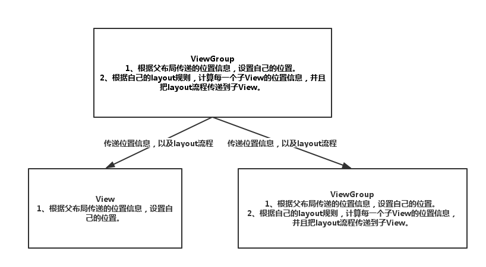
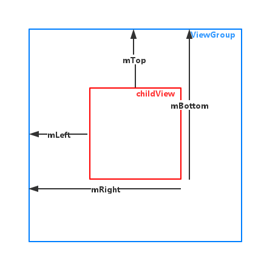

本文基于 Android API 24
View 类是用户接口的基础构件。 View 表示屏幕上的一块矩形区域，负责绘制这个区域和事件处理。
View 是所有 widget 类的基类，Widget 类用于创建交互式UI构件（按钮，输入框等）。
View 类的 ViewGroup 子类是 layout 的基类，Layout 是一个不可见的容器，它保存着 View（或 ViewGroup）并定义这些 View 的 layout 属性。
Android 中 View 框架的工作机制中，主要有三个过程：
View 的生命周期：(不包括触摸，按键事件等)
Constructors -- 先调用合适的构造方法构造对象
onFinishInflate() -- 如果是从 xml 加载的 View, 会调用此方法
onAttachedToWindow() -- 当 View 添加到 Window 的时候调用（在 Activity 第一次执行完 onResume 方法后被调用）
onWindowVisibilityChanged(int) -- 窗口可见性变化时候回调(比如：每次窗口进入前台或回到后台，但是电源键不会触发)
onMeasure(int, int) -- 测量方法，可能会调用多次
onLayout(boolean, int, int, int, int) -- 布局方法，可能会调用多次
onSizeChanged(int, int, int, int) -- 尺寸大小改变回调
onWindowFocusChanged(boolean) -- 窗体焦点改变时回调(比如：每次窗口进入前台或回到后台，，但是电源键不会触发)
onDraw(Canvas) -- 绘制 View(比如：每次窗口进入前台)
onDetachedFromWindow -- 从 Window 移除时回调(在 Activity 调用 onDestroy 方法时)
开发人员在绘制 UI 的时候，基本都是通过 XML 布局文件的方式来配置 UI，而每个 View 必须要设置的两个属性就是 layout_width 和 layout_height，这两个属性代表着当前 View 的尺寸。
如果 layout_width 和 layout_height 这两个属性只允许设置固定的大小，那么每个 View 的尺寸在绘制的时候就已经确定了，所以可能都不需要 measure 过程。但是由于需要满足自适应尺寸的机制，所以需要一个 measure 过程。
由于前面提到的自适应尺寸的机制，所以在用自适应尺寸来定义 View 大小的时候，View 的真实尺寸还不能确定。但是 View 尺寸最终需要映射到屏幕上的像素大小，所以 measure 过程就是干这件事，把各种尺寸值，经过计算，得到具体的像素值。measure 过程会遍历整棵 View 树，然后依次测量每个 View 真实的尺寸。具体是每个 ViewGroup 会向它内部的每个子 View 发送 measure 命令，然后由具体子 View 的 onMeasure() 来测量自己的尺寸。最后测量的结果保存在 View 的 mMeasuredWidth 和 mMeasuredHeight 中，保存的数据单位是像素。
系统在遍历完布局文件后，针对布局文件，在内存中生成对应的 View 树结构，这个时候，整棵 View 树种的所有 View 对象，都还没有具体的尺寸，因为 measure 过程最终是要确定每个 View 的准确尺寸，也就是准确的像素值。但是刚开始的时候，View 中 layout_width 和 layout_height 两个属性的值，都只是自适应的尺寸，也就是 match_parent 和 wrap_content，这两个值在系统中为负数，所以系统不会把它们当成具体的尺寸值。所以当一个 View 需要把它内部的 match_parent 或者 wrap_content 转换成具体的像素值的时候，他需要知道两个信息。
谈到传递限制信息，那就是 MeasureSpec 类了，该类贯穿于整个 measure 过程，用来传递父布局对子 View 尺寸测量的约束信息。简单来说，该类就保存两类数据。
子 View 当前所在父布局的具体尺寸。
父布局对子 View 的限制类型。
那么限制类型又分为三种类型(int 值的最高两位表示, 另外还有一个 MEASURED_STATE_TOO_SMALL = 0x01000000 表示测量的大小小于视图希望拥有的空间, 剩下的 24 位表示尺寸大小)：
MeasureSpec.UNSPECIFIED(0 << 30)
MeasureSpec.EXACTLY(1 << 30)
MeasureSpec.AT_MOST(2 << 30)
static int getMode(int measureSpec) -- 根据提供的测量值(格式)提取模式(上述三个模式之一)
static int getSize(int measureSpec) -- 根据提供的测量值(格式)提取大小值(这个大小就是尺寸)
static int makeMeasureSpec(int size, int mode) -- 根据提供的大小值和模式创建一个测量值(格式)
ViewGroup 和 View 的 measure 相关方法(都可能调用多次)：
/** 重写 ViewGroup 的 onMeasure 方法： */
@Override
protected void onMeasure(int widthMeasureSpec, int heightMeasureSpec) {
// 确定 ViewGroup 自身的大小
super.onMeasure(widthMeasureSpec, heightMeasureSpec);
// 此方法是 ViewGroup 的方法，要求测量子 View 的大小(会分别调用每个子 View(包括 ViewGroup) 的 onMeasure 方法)
measureChildren(widthMeasureSpec, heightMeasureSpec);
}
/** 重写 View 的 onMeasure 方法: */
@Override
protected void onMeasure(int widthMeasureSpec, int heightMeasureSpec) {
// 可以更改 View 的尺寸，比如这里将原来的宽度 +100, 单位为像素
int size = MeasureSpec.getSize(widthMeasureSpec); // 获取到从 xml 传过来的尺寸, 单位为像素
int newWidthMeasureSpec = MeasureSpec.makeMeasureSpec(size + 100, MeasureSpec.EXACTLY);
// 确定 View 的大小
super.onMeasure(newWidthMeasureSpec, heightMeasureSpec);
}
View 框架在经过第一步的 measure 过程后，成功计算了每一个 View 的尺寸。但是要成功的把 View 绘制到屏幕上，只有 View 的尺寸还不行，还需要准确的知道该 View 应该被绘制到什么位置。除此之外，对一个 ViewGroup 而言，还需要根据自己特定的 layout 规则，来正确的计算出子 View 的绘制位置，已达到正确的 layout 目的。这也就是 layout 过程的职责。
该位置是 View 相对于父布局坐标系的相对位置，而不是以屏幕坐标系为准的绝对位置。这样更容易保持树型结构的递归性和内部自治性。而 View 的位置，可以无限大，超出当前 ViewGroup 的可视范围，这也是通过改变 View 位置而实现滑动效果的原理。
由于 View 是以树结构进行存储，所以典型的数据操作就是递归操作，所以，View 框架中，采用了内部自治的 layout 过程。
每个叶子节点根据父节点传递过来的位置信息，设置自己的位置数据，每个非叶子节点，除了负责根据父节点传递过来的位置信息，设置自己的位置数据外（如果有父节点的话），还需要根据自己内部的 layout 规则（比如垂直排布等），计算出每一个子节点的位置信息，然后向子节点传递 layout 过程。
对于 ViewGroup，除了根据自己的 parent 传递的位置信息，来设置自己的位置之外，还需要根据自己的 layout 规则，为每一个子 View 计算出准确的位置（相对于子 View 的父布局的位置）。
对于 View，根据自己的 parent 传递的位置信息，来设置自己的位置。

View 对象的位置信息，在内部是以 4 个成员变量的保存的，分别是 mLeft、mRight、mTop、mBottom。他们的含义如图所示。

ViewGroup 的 layout 相关方法：(View 的 onLayout 方法是空实现)
/** ViewGroup 的 onLayout 方法，指定子 View 的位置: */
@Override
protected void onLayout(boolean changed, int l, int t, int r, int b) {
int count = getChildCount();
View child = null;
int left = 0;
int top = 0;
for (int i = 0; i < count; i++) {
child = getChildAt(i);
int right = left + child.getMeasuredWidth();
int bottom = top + child.getMeasuredHeight();
/** 这个方法指定子 View 的位置和大小 */
child.layout(left, top, right, bottom);
left = (left + right) / 2;
top = (top + bottom) / 2;
}
}
View 框架在经过了 measure 过程和 layout 过程之后，就已经确定了每一个 View 的尺寸和位置。那么接下来，也是一个重要的过程，就是 draw 过程，draw 过程是用来绘制 View 的过程，它的作用就是使用 graphic 框架提供的各种绘制功能，绘制出当前 View 想要的样子。
View 框架中，draw 过程主要是绘制 View 的外观。ViewGroup 除了负责绘制自己之外，还需要负责绘制所有的子 View。而不含子 View 的 View 对象，就负责绘制自己就可以了。
draw 过程的主要流程如下：
绘制 backgroud（drawBackground）
如果需要的话，保存 canvas 的 layer，来准备 fading（不是必要的步骤）
绘制 view 的 content（onDraw方法）
绘制 children（dispatchDraw方法）
如果需要的话，绘制 fading edges，然后还原 layer（不是必要的步骤）
绘制装饰器、比如 scrollBar（onDrawForeground）
Android 事件传递机制也是 Android 系统中比较重要的一块，事件类型有很多种，这里主要讨论 TouchEvent 的事件在 framework 层的传递处理机制。
当 Android 设备的屏幕，接收到触摸的动作时，屏幕驱动把压力信号（包括压力大小，压力位置等）传递给系统底层，然后操作系统经过一系列的处理，然后把触摸事件一层一层的向上传递，最终事件会被准确的传递到产生事件的对象上，系统会遍历每一个 View 对象，然后计算触摸点在哪一个 View 中。比如 A 和 B 两个 View，是兄弟 View，AView 产生的触摸事件，是不会被分发到 B 上面的。
在 Android 系统中，一个单独的事件基本上是没什么作用的，只有一个事件序列，才有意义。一个事件序列正常情况下，定义为 DOWN、MOVE（0 或者多个）、UP/CANCEL。事件序列以 DOWN 事件开始，中间会有 0 或者多个 MOVE 事件，最后以 UP 事件或者 CANCEL 事件结束。
DOWN 事件作为序列的开始，有一个很重要的职责，就是寻找事件序列的接受者，怎么理解呢？framework 在 DOWN 事件的传递过程中，需要根据 View 事件处理方法（onTouchEvent）的返回值来确定事件序列的接受者。如果一个 View 的 onTouchEvent 事件，在处理 DOWN 事件的时候返回 true，说明它愿意接受并处理该事件序列。
触摸事件到了 framework 层之后，首先会被传递到 Activity，然后 Activity 会把事件委托给它内部的 Window 对象进行分发处理，而 Window 对象又会委托它内部的 DecorView 进行事件分发处理。我们都知道，DecorView 是整棵 View 树的根节点，所以整个事件传递过程的复杂度就是事件在 View 树种分发传递的复杂度。 Android View 框架提供了 3 个对事件的主要操作概念。
1、事件的分发机制，dispatchTouchEvent。主要是 parent 根据触摸事件的产生位置，以及 child 是否愿意负责处理该系列事件等状态，向其 child 分发事件的机制。
2、事件的拦截机制，onInterceptTouchEvent。主要是 parent 根据它内部的状态、或者 child 的状态，来把事件拦截下来，阻止其进一步传递到 child 的机制。
3、事件的处理机制，onTouchEvent。主要是事件序列的接受者（可以是一个 View 或者 ViewGroup），对事件作出处理，并且向其 parent 传递处理结果的机制。
在 Java 中，传递计算结果，有很多种途径，这里采用的是一种适用于同步调用的方法，返回值的方法。每个机制都使用 boolean 类型作为其返回值，那么每个机制的每个返回值是什么含义呢。
1、事件的分发机制，dispatchTouchEvent。
true - 事件被以该节点为根节点的 View 树成功处理，此时该事件就算是处理完成了，事件不会再向上返还给 View 的父节点（把事件分发过来的那个节点）。
false - 以该节点为根节点的 View 树中，没有一个 View（包括该 ViewGroup）成功处理了此事件，所以事件会向上返还给 View 的父节点（把事件分发过来的那个节点）。
2、事件的拦截机制，onInterceptTouchEvent。主要是 parent 根据它内部的状态、或者 child 的状态，来把事件拦截下来，阻止其进一步传递到 child 的机制。
true - 当前 ViewGroup（因为 View 中没有该方法，而没有 child 的 View也不需要有拦截机制）希望该事件不再传递给其 child，而是希望自己处理。
false - 当前 ViewGroup 不准备拦截该事件，事件正常向下分发给其 child。
3、事件的处理机制，onTouchEvent。主要是事件序列的接受者（可以是一个 View 或者 ViewGroup），对事件作出处理，并且向其 parent 传递处理结果的机制。
true - 表示该 View 成功处理了该事件，该处理结果会向上通知给其 parent。
false - 表示该 View 没有成功处理该事件，那么它的 parent 会有机会来处理该事件（parent 标记为事件序列接受者，parent 的 onTouchEvent 在 Down 事件时返回 true）。
ViewGroup 和 View 的 dispatchTouchEvent(MotionEvent), onInterceptTouchEvent(MotionEvent) 和 onTouchEvent(MotionEvent)
如果调用 ViewGroup 的 dispatchTouchEvent(MotionEvent) 直接返回 true, 那么触控一直调用此方法，不会调用其他方法和子 View 的其他方法；
如果调用 ViewGroup 的 dispatchTouchEvent(MotionEvent) 直接返回 false, 那么触控事件只调用一次此方法，不会调用其他方法和子 View 的其他方法；
如果调用 ViewGroup 的 dispatchTouchEvent(MotionEvent) 返回 super.dispatchTouchEvent(MotionEvent), 参见下面的所有项：
如果调用 ViewGroup 的 onInterceptTouchEvent(MotionEvent) 直接返回 true, 事件不会传递到子 View 中去。
如果 onTouchEvent(MotionEvent) 也直接返回 true, 那么调用一次 onInterceptTouchEvent(MotionEvent), 不断调用 dispatchTouchEvent(MotionEvent) 和 onTouchEvent(MotionEvent)
如果 onTouchEvent(MotionEvent) 返回 super.onTouchEvent(MotionEvent) 或者 false, 那么调用一次 onInterceptTouchEvent(MotionEvent), dispatchTouchEvent(MotionEvent) 和 onTouchEvent(MotionEvent)
如果调用 ViewGroup 的 onInterceptTouchEvent(MotionEvent) 返回 super.onTouchEvent(MotionEvent) 或者 false, 事件传递到子 View 中去。
如果 onTouchEvent(MotionEvent) 返回 super.onTouchEvent(MotionEvent) 或者 true, 那么调用一次 onInterceptTouchEvent(MotionEvent), 不断调用 dispatchTouchEvent(MotionEvent) 和 onTouchEvent(MotionEvent)
如果 onTouchEvent(MotionEvent) 直接返回 false, 那么调用一次 onInterceptTouchEvent(MotionEvent), dispatchTouchEvent(MotionEvent) 和 onTouchEvent(MotionEvent)
如果调用 View 的 dispatchTouchEvent(MotionEvent) 返回 super.dispatchTouchEvent(MotionEvent)
如果 onTouchEvent(MotionEvent) 返回 false, 那么调用一次 dispatchTouchEvent(MotionEvent) 和 onTouchEvent(MotionEvent)
如果 onTouchEvent(MotionEvent) 返回 true, 那么不断调用 dispatchTouchEvent(MotionEvent) 和 onTouchEvent(MotionEvent)
如果调用 View 的 dispatchTouchEvent(MotionEvent) 直接返回 false, 那么调用一次 dispatchTouchEvent(MotionEvent)，不会调用其他方法；
如果调用 View 的 dispatchTouchEvent(MotionEvent) 直接返回 true
如果 onTouchEvent(MotionEvent) 返回 true, 那么触控一直调用 dispatchTouchEvent(MotionEvent) 和 onTouchEvent(MotionEvent)
如果 onTouchEvent(MotionEvent) 返回 super.onTouchEvent(MotionEvent) 或者 false, 那么触控一直调用 dispatchTouchEvent(MotionEvent)
public class ChildViewPager extends ViewPager {
/** 触摸时按下的点 **/
PointF downP = new PointF();
/** 触摸时当前的点 **/
PointF curP = new PointF();
OnSingleTouchListener onSingleTouchListener;
public ChildViewPager(Context context, AttributeSet attrs) {
super(context, attrs);
}
public ChildViewPager(Context context) {
super(context);
}
@Override
public boolean onInterceptTouchEvent(MotionEvent arg0) {
// 当拦截触摸事件到达此位置的时候，返回true，
// 说明将onTouch拦截在此控件，进而执行此控件的onTouchEvent
return true;
}
@Override
public boolean onTouchEvent(MotionEvent arg0) {
// 每次进行onTouch事件都记录当前的按下的坐标
curP.x = arg0.getX();
curP.y = arg0.getY();
if (arg0.getAction() == MotionEvent.ACTION_DOWN) {
// 记录按下时候的坐标
// 切记不可用 downP = curP ，这样在改变curP的时候，downP也会改变
downP.x = arg0.getX();
downP.y = arg0.getY();
// 此句代码是为了通知他的父ViewPager现在进行的是本控件的操作，不要对我的操作进行干扰
getParent().requestDisallowInterceptTouchEvent(true);
}
if (arg0.getAction() == MotionEvent.ACTION_MOVE) {
// 此句代码是为了通知他的父ViewPager现在进行的是本控件的操作，不要对我的操作进行干扰
getParent().requestDisallowInterceptTouchEvent(true);
}
if (arg0.getAction() == MotionEvent.ACTION_UP) {
// 在up时判断是否按下和松手的坐标为一个点
// 如果是一个点，将执行点击事件，这是我自己写的点击事件，而不是onclick
if (downP.x == curP.x && downP.y == curP.y) {
onSingleTouch();
return true;
}
}
return super.onTouchEvent(arg0);
}
/**
* 单击
*/
public void onSingleTouch() {
if (onSingleTouchListener != null) {
onSingleTouchListener.onSingleTouch();
}
}
/**
* 创建点击事件接口
*/
public interface OnSingleTouchListener {
public void onSingleTouch();
}
public void setOnSingleTouchListener(OnSingleTouchListener onSingleTouchListener) {
this.onSingleTouchListener = onSingleTouchListener;
}
}
public class MyViewPager extends ViewPager {
private int startX;
private int startY;
public MyViewPager(Context context) {
super(context);
}
@Override
public boolean onInterceptTouchEvent(MotionEvent ev) {
switch (ev.getAction()) {
case MotionEvent.ACTION_DOWN:
startX = (int) ev.getX();
startY = (int) ev.getY();
break;
case MotionEvent.ACTION_MOVE:
int dX = (int) (ev.getX() - startX);
int dY = (int) (ev.getY() - startX);
if (Math.abs(dX) > Math.abs(dY)) {// 左右滑动
return true;
} else {// 上下滑动
return false;
}
case MotionEvent.ACTION_UP:
break;
}
return super.onInterceptTouchEvent(ev);
}
}
public class MyListView exdents ListView {
public MyListView(Context context, AttributeSet attrs) {
super(context, attrs);
}
public MyListView(Context context) {
super(context);
}
@Override
public boolean onTouchEvent(MotionEvent ev) {
super.onTouchEvent(ev);
switch (ev.getAction()) {
case MotionEvent.ACTION_DOWN:
// 通知parent，是否拦截后续事件，如果设置为true，parent就不会拦截该事件，不管什么状态。
getParent().requestDisallowInterceptTouchEvent(true);
break;
case MotionEvent.ACTION_MOVE:
break;
case MotionEvent.ACTION_UP:
// 设置为false，parent走正常的拦截流程
getParent().requestDisallowInterceptTouchEvent(false);
break;
default:
break;
}
return true;
}
}
View 类和其实现的接口
java.lang.Object
android.view.View
public class View implements Drawable.Callback, Drawable.Callback2, KeyEvent.Callback,
AccessibilityEventSource {
/** View 的可见性，参见：setVisibility(int) 和 xml 属性 android:visibility */
public static final int VISIBLE = 0x00000000; // 可见
public static final int INVISIBLE = 0x00000004; // 不可见，占空间
public static final int GONE = 0x00000008; // 不可见，不占空间
/** 导航栏和状态栏设置，参见：setSystemUiVisibility(int)， 可同时使用多个参数 */
public static final int SYSTEM_UI_FLAG_VISIBLE = 0; // 显示导航栏和状态栏
public static final int SYSTEM_UI_FLAG_LOW_PROFILE = 0x00000001; // 系统UI变暗(触摸又变亮)
public static final int SYSTEM_UI_FLAG_HIDE_NAVIGATION = 0x00000002; // 隐藏导航栏(触摸又可见)
public static final int SYSTEM_UI_FLAG_FULLSCREEN = 0x00000004; // 全屏模式(隐藏状态栏)
public static final int SYSTEM_UI_FLAG_LAYOUT_STABLE = 0x00000100; // 状态栏改变不影响布局
public static final int SYSTEM_UI_FLAG_LAYOUT_HIDE_NAVIGATION = 0x00000200; // 视图希望布局成无导航栏
public static final int SYSTEM_UI_FLAG_LAYOUT_FULLSCREEN = 0x00000400; // 视图希望布局成全屏模式
public static final int SYSTEM_UI_FLAG_IMMERSIVE = 0x00000800; // 隐藏导航栏时触摸也不可见
public static final int SYSTEM_UI_FLAG_IMMERSIVE_STICKY = 0x00001000; // 可理解为同上
public static final int SYSTEM_UI_FLAG_LIGHT_STATUS_BAR = 0x00002000; // 改变状态栏颜色(深/浅)
public static final int SYSTEM_UI_LAYOUT_FLAGS = SYSTEM_UI_FLAG_LAYOUT_HIDE_NAVIGATION
| SYSTEM_UI_FLAG_LAYOUT_FULLSCREEN; // 定义可以影响系统 UI 的标志
/** 拖放操作，参见：startDragAndDrop (ClipData, View.DragShadowBuilder, Object myLocalState, int) */
public static final int DRAG_FLAG_GLOBAL = 1 << 8; // 256, 指示拖动可以跨越窗口边界
public static final int DRAG_FLAG_GLOBAL_PERSISTABLE_URI_PERMISSION =
Intent.FLAG_GRANT_PERSISTABLE_URI_PERMISSION;
public static final int DRAG_FLAG_GLOBAL_PREFIX_URI_PERMISSION =
Intent.FLAG_GRANT_PREFIX_URI_PERMISSION;
public static final int DRAG_FLAG_GLOBAL_URI_READ = Intent.FLAG_GRANT_READ_URI_PERMISSION;
public static final int DRAG_FLAG_GLOBAL_URI_WRITE = Intent.FLAG_GRANT_WRITE_URI_PERMISSION;
public static final int DRAG_FLAG_OPAQUE = 1 << 9; // 512，指示拖动阴影将不透明的标志
/** 绘图缓存质量，参见：setDrawingCacheQuality(int) 和 xml 属性 android:drawingCacheQuality */
public static final int DRAWING_CACHE_QUALITY_AUTO = 0x00000000; // 自动
public static final int DRAWING_CACHE_QUALITY_LOW = 0x00080000; // 低
public static final int DRAWING_CACHE_QUALITY_HIGH = 0x00100000; // 高
/** 查找包含给定文本的视图，参见：findViewsWithText(ArrayList<View>, CharSequence, int) */
public static final int FIND_VIEWS_WITH_TEXT = 0x00000001;
public static final int FIND_VIEWS_WITH_CONTENT_DESCRIPTION = 0x00000002;
/** 添加可获得焦点的的视图列表模式，参见：addFocusables(ArrayList, int, int) */
public static final int FOCUSABLES_ALL = 0x00000000; // 添加所有视图
public static final int FOCUSABLES_TOUCH_MODE = 0x00000001; // 只添加可在触摸模式下聚焦的视图
/** 查找下一个焦点视图，参见：addFocusables(ArrayList, int, int) 和 focusSearch (int) */
public static final int FOCUS_BACKWARD = 0x00000001; // 向后查找
public static final int FOCUS_FORWARD = 0x00000002; // 向前查找
public static final int FOCUS_LEFT = 0x00000011; // 向左查找
public static final int FOCUS_UP = 0x00000021; // 向上查找
public static final int FOCUS_RIGHT = 0x00000042; // 向右查找
public static final int FOCUS_DOWN = 0x00000082; // 向下查找
/** 指示屏幕应该保持打开，setKeepScreenOn(boolean) 及 xml 属性 android:keepScreenOn */
public static final int KEEP_SCREEN_ON = 0x04000000;
/** 屏幕状态改变（按下电源键），参见：onScreenStateChanged(int) */
public static final int SCREEN_STATE_OFF = 0x0; // 关闭
public static final int SCREEN_STATE_ON = 0x1; // 打开
public static final int NO_ID = -1; // 用于标记没有 ID 的 View
/** 是否有点击事件的声音效果，参见： setSoundEffectsEnabled(boolean) 和 android:soundEffectsEnabled */
public static final int SOUND_EFFECTS_ENABLED = 0x08000000;
/** 是否有长按等触觉反馈，参见： setHapticFeedbackEnabled(boolean) 和 android:hapticFeedbackEnabled */
public static final int HAPTIC_FEEDBACK_ENABLED = 0x10000000;
/** 支持此视图的层的类型，参见：setLayerType(int, Paint) 和 android:layerType */
public static final int LAYER_TYPE_NONE = 0; // 无图层
public static final int LAYER_TYPE_SOFTWARE = 1; // 软件层
public static final int LAYER_TYPE_HARDWARE = 2; // 硬件层
/** 水平布局方向，参见：setLayoutDirection(int) 和 android:layoutDirection */
public static final int LAYOUT_DIRECTION_INHERIT = LayoutDirection.INHERIT; // 继承父容器
public static final int LAYOUT_DIRECTION_LOCALE = LayoutDirection.LOCALE; // 本地语言
public static final int LAYOUT_DIRECTION_LTR = LayoutDirection.LTR; // 左 - 右
public static final int LAYOUT_DIRECTION_RTL = LayoutDirection.RTL; // 右 - 左
/** 参见：getMeasuredState() 和 resolveSizeAndState(int, int, int) */
public static final int MEASURED_HEIGHT_STATE_SHIFT = 16;
public static final int MEASURED_SIZE_MASK = 0x00ffffff;
public static final int MEASURED_STATE_MASK = 0xff000000;
public static final int MEASURED_STATE_TOO_SMALL = 0x01000000;
/** 滚动条的可见性，参见：setOverScrollMode(int) 和 android:overScrollMode */
public static final int OVER_SCROLL_ALWAYS = 0; // 总是可见
public static final int OVER_SCROLL_IF_CONTENT_SCROLLS = 1; // 需要的时候可见
public static final int OVER_SCROLL_NEVER = 2; // 不可见
/** 滚动条样式，参见：setScrollBarStyle(int) 和 xml 属性 android:scrollbarStyle */
public static final int SCROLLBARS_INSIDE_OVERLAY = 0; // 在内容区域内显示滚动条，而不增加填充
public static final int SCROLLBARS_INSIDE_INSET = 0x01000000; // 填充区域内显示滚动条，增加视图的填充
public static final int SCROLLBARS_OUTSIDE_OVERLAY = 0x02000000; // 视图的边缘显示滚动条，而不增加填充
public static final int SCROLLBARS_OUTSIDE_INSET = 0x03000000; // 视图的边缘显示滚动条，增加视图的填充
/** 纵向滚动条的位置，参见：setVerticalScrollbarPosition(int) 和 android:verticalScrollbarPosition */
public static final int SCROLLBAR_POSITION_DEFAULT = 0; // 默认位置
public static final int SCROLLBAR_POSITION_LEFT = 1; // 左边
public static final int SCROLLBAR_POSITION_RIGHT = 2; // 右边
/** 滚动条的滚动方向 */
public static final int SCROLL_AXIS_NONE = 0; // 指示没有滚动轴滚动
public static final int SCROLL_AXIS_HORIZONTAL = 1 << 0; // 横向滚动轴
public static final int SCROLL_AXIS_VERTICAL = 1 << 1; // 纵向滚动轴
/** 滚动条指示器，参见： setScrollIndicators(int) 和 android:scrollIndicators */
public static final int SCROLL_INDICATOR_BOTTOM = ... // 可向下滚动
public static final int SCROLL_INDICATOR_TOP = ... // 可向上滚动
public static final int SCROLL_INDICATOR_LEFT = ... // 可向左滚动
public static final int SCROLL_INDICATOR_RIGHT = ... // 可向右滚动
public static final int SCROLL_INDICATOR_START = ... // 可向开始位置滚动
public static final int SCROLL_INDICATOR_END = ... // 可向结束位置滚动
/** 文本对齐方式，参见：setTextAlignment(int) 和 android:textAlignment */
public static final int TEXT_ALIGNMENT_INHERIT = 0; // 从父容器继承
public static final int TEXT_ALIGNMENT_GRAVITY = 1; // 重力方向
public static final int TEXT_ALIGNMENT_TEXT_START = 2; // 段落的开头
public static final int TEXT_ALIGNMENT_VIEW_END = 3; // 对齐视图的开始
public static final int TEXT_ALIGNMENT_CENTER = 4; // 居中
public static final int TEXT_ALIGNMENT_VIEW_START = 5; // 对齐视图的结尾
public static final int TEXT_ALIGNMENT_TEXT_END = 6; // 段落的结尾
/** 文本方向，参见：setTextDirection(int) 和 android:textDirection */
public static final int TEXT_DIRECTION_INHERIT = 0;
public static final int TEXT_DIRECTION_FIRST_STRONG = 1;
public static final int TEXT_DIRECTION_ANY_RTL = 2;
public static final int TEXT_DIRECTION_LTR = 3;
public static final int TEXT_DIRECTION_RTL = 4;
public static final int TEXT_DIRECTION_LOCALE = 5;
public static final int TEXT_DIRECTION_FIRST_STRONG_LTR = 6;
public static final int TEXT_DIRECTION_FIRST_STRONG_RTL = 7;
/** 可访问性服务相关，参见：setAccessibilityLiveRegion(int mode) 和 android:accessibilityLiveRegion */
public static final int ACCESSIBILITY_LIVE_REGION_NONE = 0x00000000;
public static final int ACCESSIBILITY_LIVE_REGION_POLITE = 0x00000001;
public static final int ACCESSIBILITY_LIVE_REGION_ASSERTIVE = 0x00000002;
/** 对于可访问性是否重要，参见：setImportantForAccessibility(int) 和 android:importantForAccessibility */
public static final int IMPORTANT_FOR_ACCESSIBILITY_AUTO = 0x00000000;
public static final int IMPORTANT_FOR_ACCESSIBILITY_YES = 0x00000001;
public static final int IMPORTANT_FOR_ACCESSIBILITY_NO = 0x00000002;
public static final int IMPORTANT_FOR_ACCESSIBILITY_NO_HIDE_DESCENDANTS = 0x00000004;
/** 触摸 */
public interface OnTouchListener { boolean onTouch(View v, MotionEvent event); }
/** 拖动 */
public interface OnDragListener { boolean onDrag(View v, DragEvent event); }
/** 响应鼠标滚轮等事件 */
public interface OnGenericMotionListener { boolean onGenericMotion(View v, MotionEvent event); }
/** 点击 */
public interface OnClickListener { void onClick(View v); }
/** 长按 */
public interface OnLongClickListener { boolean onLongClick(View v); }
/** 按键 */
public interface OnKeyListener { boolean onKey(View v, int keyCode, KeyEvent event); }
/** 鼠标划过 */
public interface OnHoverListener { boolean onHover(View v, MotionEvent event); }
/** 滑动位置改变 */
public interface OnScrollChangeListener {
void onScrollChange(View v, int scrollX, int scrollY, int oldScrollX, int oldScrollY);
}
/** 焦点改变 */
public interface OnFocusChangeListener { void onFocusChange(View v, boolean hasFocus);
/** ContextMenu 点击 */
public interface OnContextClickListener { boolean onContextClick(View v); }
/** 创建 ContextMenu */
public interface OnCreateContextMenuListener {
void onCreateContextMenu(ContextMenu menu, View v, ContextMenuInfo menuInfo);
}
/** 状态栏可见性改变 */
public interface OnSystemUiVisibilityChangeListener {
public void onSystemUiVisibilityChange(int visibility);
}
/** View 被添加到 Window 或者 从 Window 移除 */
public interface OnAttachStateChangeListener {
public void onViewAttachedToWindow(View v);
public void onViewDetachedFromWindow(View v);
}
/** 监听器,参见:WindowInsets */
public interface OnApplyWindowInsetsListener {
public WindowInsets onApplyWindowInsets(View v, WindowInsets insets);
}
/** 布局边界改变 */
public interface OnLayoutChangeListener {
void onLayoutChange(View v, int left, int top, int right, int bottom,
int oldLeft, int oldTop, int oldRight, int oldBottom);
}
/** 尺寸及尺寸模式 */
public static class MeasureSpec {}
/** 拖曳阴影构建器 */
public static class DragShadowBuilder {};
/** 保存 View 的状态，自定义可继承此类，参见：onSaveInstanceState() 和 onRestoreInstanceState(Parcelable) */
public static class BaseSavedState extends AbsSavedState {}
/** 该类表示可以在视图中注册的委托，以通过构造函数而不是继承来增强可访问性支持 */
public static class AccessibilityDelegate {}
/** 构造函数 */
public View(Context context) {}
public View(Context context, AttributeSet attrs) {}
public View(Context context, AttributeSet attrs, int defStyleAttr) {}
public View(Context context, AttributeSet attrs, int defStyleAttr, int defStyleRes) {}
}
/** Drawable.Callback 接口 */
public interface Callback {
public void invalidateDrawable(Drawable who);
public void scheduleDrawable(Drawable who, Runnable what, long when);
public void unscheduleDrawable(Drawable who, Runnable what);
}
/** Drawable.Callback2 接口 */
public int getResolvedLayoutDirection(Drawable who);
/** KeyEvent.Callback 接口 */
public interface Callback {
boolean onKeyDown(int keyCode, KeyEvent event);
boolean onKeyLongPress(int keyCode, KeyEvent event);
boolean onKeyUp(int keyCode, KeyEvent event);
boolean onKeyMultiple(int keyCode, int count, KeyEvent event);
}
/** AccessibilityEventSource 接口 */
public interface AccessibilityEventSource {
public void sendAccessibilityEvent(int eventType);
public void sendAccessibilityEventUnchecked(AccessibilityEvent event);
}
View 类的 XML 属性
android:layout_width
-- 宽度设置
android:layout_height
-- 高度设置
android:background
-- 设置背景色/背景图片。可以通过以下两种方法设置背景为透明：
@android:color/transparent
和
@null
。
android:alpha
-- 透明度设置。
android:clickable
-- 是否响应点击事件。
android:theme
-- 主题设置
android:id
-- 给当前 View 设置一个在当前 layout.xml 中的唯一编号，可 以通过调用
View.findViewById() 或 Activity.findViewById() 根据这个编号查找到对应的
View。不同的 layout.xml 之间 定义相同的 id 不会冲突。格式如
@+id/btnName
android:contentDescription
-- 设置 View 的备注说明，作为一种辅助功能提供，为一些没 有文字描述的 View 提供说明，如
ImageButton。这里在界 面上不会有效果，自己在程序中控制，可临时放一点字符 串数据。
android:drawingCacheQuality
-- 设置绘图时半透明质量。有以下值可设置：auto（默认， 由框架决定）/ high（高质量，使用较高的颜色深度，消耗
更多的内存）/ low（低质量，使用较低的颜色深度，但是 用更少的内存）。
android:duplicateParentState
-- 如果设置此属性，将直接从父容器中获取绘图状态（光标， 按下等）。 见下面代码部分，注意根据目前测试情况仅仅是
获取绘图状态，而没有获取事件，也就是你点一下 LinearLayout 时 Button 有被点击的效果，但是不执行点击事
件。
android:fadingEdge
-- 设置拉滚动条时 ，边框渐变的放向。none（边框颜色不
变），horizontal（水平方向颜色变淡），vertical （垂直方向颜色变淡）。
android:fadingEdgeLength
-- 设置边框渐变的长度。
android:fitsSystemWindows
-- 设置布局调整时是否考虑系统窗口（如状态栏）
android:focusable
-- 设置是否获得焦点。若有 requestFocus() 被调用时，后者 优先处理。注意在表单中想设置某一个如
EditText 获取焦 点，光设置这个是不行的，需要将这个 EditText 前面的 focusable 都设置为
false 才行。在 Touch 模式下获取焦点 需要设置 focusableInTouchMode 为 true。
android:focusableInTouchMode
-- 设置在Touch模式下View是否能取得焦点。
android:hapticFeedbackEnabled
-- 设置触感反馈。（按软键以及进行某些 UI 交互时振动）
android:isScrollContainer
-- 设置当前 View 为滚动容器。这里没有测试出效果来， ListView/ GridView / ScrollView
根本就不用设置这个属性， 而 EdidText 设置 android:scrollbars 也能出滚动条。
android:keepScreenOn
-- View 在可见的情况下是否保持唤醒状态.
android:longClickable
-- 设置是否响应长按事件.
android:minHeight
-- 设置视图最小高度
android:minWidth
-- 设置视图最小宽度度
android:nextFocusDown
-- 设置下方指定视图获得下一个焦点。焦点移动是基于一个 在给定方向查找最近邻居的算法。如果指定视图不存在，
移动焦点时将报运行时错误。可以设置 imeOptions=actionDone，这样输入完即跳到下一个焦点。
android:nextFocusLeft
-- 设置左边指定视图获得下一个焦点。
android:nextFocusRight
-- 设置右边指定视图获得下一个焦点。
android:nextFocusUp
-- 设置上方指定视图获得下一个焦点。
android:onClick
-- 点击时从上下文中调用指定的方法。这里指定一个方法名 称(
android:onClick=”onClickButton”
)，一般在 Activity 定义符合如下参数和返回值的函数并将 方法名字符串指定为该值即可：
public void onClickButton(View view) {}
android:padding
-- 设置上下左右的边距，以像素为单位填充空白。
android:paddingBottom
-- 设置底部的边距，以像素为单位填充空白。
android:paddingLeft
-- 设置左边的边距，以像素为单位填充空白。
android:paddingRight
-- 设置右边的边距，以像素为单位填充空白。
android:paddingTop
-- 设置上方的边距，以像素为单位填充空白。
android:saveEnabled
-- 设置是否在窗口冻结时（如旋转屏幕）保存 View 的数据，默认为 true，但是前提是你需要设置 id 才能自动保存
android:scrollX
-- 以像素为单位设置水平方向滚动的的偏移值，在 GridView 中可看的这个效果。
android:scrollY
-- 以像素为单位设置垂直方向滚动的的偏移值
android:scrollbarAlwaysDrawHorizontalTrack
-- 设置是否始终显示垂直滚动条。这里用 ScrollView、ListView 测试均没有效果。
android:scrollbarAlwaysDrawVerticalTrack
-- 设置是否始终显示垂直滚动条。这里用 ScrollView、ListView 测试均没有效果。
android:scrollbarDefaultDelayBeforeFade
-- 设置滚动条 N 毫秒后开始淡化，以毫秒为单位。
android:scrollbarFadeDuration
-- 设置滚动条淡出效果（从有到慢慢的变淡直至消失）时间， 以毫秒为单位。
android:scrollbarSize
-- 设置滚动条的宽度
android:scrollbarStyle
-- 设置滚动条的模式
android:scrollbarThumbHorizontal
-- 设置水平滚动条的 Drawable
android:scrollbarThumbVertical
-- 设置垂直滚动条的 Drawable
android:scrollbarTrackHorizontal
-- 设置水平滚动条背景（轨迹）的色 Drawable
android:scrollbarTrackVertical
-- 设置垂直滚动条背景（轨迹）的 Drawable
android:scrollbars
-- 设置滚动条显示。none（隐藏），horizontal（水平），vertical （垂直）。
android:soundEffectsEnabled
-- 设置点击或触摸时是否有声音效果
android:tag
-- 设置一个文本标签，通常用来保存数据。
android:visibility
-- 设置是否显示View。设置值：visible（默认值，显示），
invisible（不显示，但是仍然占用空间），gone （不显示，不占用空间）
View 类的 static API:
static View inflate(Context context, int resource, ViewGroup root) -- 从 xml 文件加载一个布局文件到 root 中, root 可为 NULL
static int generateViewId() -- 生成一个可用于 View 的 ID 的值，此值不会与 R.id 中的值冲突
static int resolveSize(int size, int measureSpec) -- 获取 size 值，参数 size 为 sizeMeasureSpec 类型
static int resolveSizeAndState(int size, int measureSpec, int childMeasuredState) -- 获取 size 值(包括一个可能的状态位: MEASURED_STATE_TOO_SMALL)
static int getDefaultSize(int size, int measureSpec) -- 获取默认大小（如果 measureSpec 是精确值，则返回 size; 否则从 measureSpec 获取 size 值返回）
static int combineMeasuredStates(int curState, int newState) -- 合并两个 getMeasureState() 的值(按位或)
View 类的 protected API:
protected void onFinishInflate() -- 如果是从 xml 加载的 View, 会调用此方法
protected void onAttachedToWindow() -- 当 View 添加到 Window 的时候调用（在 Activity 第一次执行完 onResume 方法后被调用）
protected void onWindowVisibilityChanged(int visibility) -- 窗口可见性变化时候回调(比如：每次窗口进入前台或回到后台，但是电源键不会触发)
protected void onMeasure(int widthMeasureSpec, int heightMeasureSpec) -- 测量方法，可能会调用多次
protected void onLayout(boolean changed, int left, int top, int right, int bottom) -- 布局方法，可能会调用多次
protected void onSizeChanged(int w, int h, int oldw, int oldh) -- 尺寸大小改变回调
protected void onDraw(Canvas canvas) -- 绘制 View(比如：每次窗口进入前台)
protected void onVisibilityChanged(View changedView, int visibility) -- 可见性改变回调
protected void onFocusChanged(boolean gainFocus, int direction, Rect previouslyFocusedRect) -- 焦点状态改变回调
protected void onDetachedFromWindow() -- 从 Window 移除时回调(在 Activity 调用 onDestroy 方法时)
protected void onConfigurationChanged(Configuration newConfig) -- 使用的资源的当前配置改变时调用
protected Parcelable onSaveInstanceState() -- 保存用户数据(比如横竖屏切换)
protected void onRestoreInstanceState(Parcelable state) -- 恢复用户数据(比如横竖屏切换)
/** 自定义内部类，用于保存用户数据 */
class MyViewSavedState extends BaseSavedState {
public int item;
public MyViewSavedState(Parcelable source) {
super(source);
}
}
@Override
protected Parcelable onSaveInstanceState() {
Parcelable superState = super.onSaveInstanceState();
MyViewSavedState savedState = new MyViewSavedState(superState);
savedState.item = 10;
return savedState;
}
@Override
protected void onRestoreInstanceState(Parcelable state) {
super.onRestoreInstanceState(state);
MyViewSavedState myState = (MyViewSavedState) state;
LogUtil.dd(TAG, "onRestoreInstanceState", myState.item);
}
protected void onCreateContextMenu(ContextMenu menu) -- 创建 ContextMenu 回调
protected void onAnimationStart() -- 补间动画开始回调
protected void onAnimationEnd() -- 补间动画结束回调
protected int[] onCreateDrawableState(int extraSpace) -- 为该视图生成新的可绘制状态
protected boolean onSetAlpha(int alpha) -- 设置透明度回调(透明度动画也会调用此方法)
protected void onDisplayHint(int hint) -- 显示提示信息回调
protected void onOverScrolled(int scrollX, int scrollY, boolean clampedX, boolean clampedY) -- 调用 overScroll(...) 方法回调
protected void onScrollChanged(int l, int t, int oldl, int oldt) -- 滚动改变回调(调用 scrollTo(int, int) 等方法可能会回调)
protected void dispatchDraw(Canvas canvas) --
protected boolean dispatchGenericFocusedEvent(MotionEvent event) --
protected boolean dispatchGenericPointerEvent(MotionEvent event) --
protected boolean dispatchHoverEvent(MotionEvent event) --
protected void dispatchRestoreInstanceState(SparseArray<Parcelable> container) --
protected void dispatchSaveInstanceState(SparseArray<Parcelable> container) --
protected void dispatchSetActivated(boolean activated) --
protected void dispatchSetPressed(boolean pressed) --
protected void dispatchSetSelected(boolean selected) --
protected void dispatchVisibilityChanged(View changedView, int visibility) --
boolean awakenScrollBars(int startDelay, boolean invalidate) --
boolean awakenScrollBars(int startDelay) --
boolean awakenScrollBars() --
int computeHorizontalScrollExtent() --
int computeHorizontalScrollOffset() --
int computeHorizontalScrollRange() --
int computeVerticalScrollExtent() --
int computeVerticalScrollOffset() --
int computeVerticalScrollRange() --
protected boolean overScrollBy(int deltaX, int deltaY, int scrollX, int scrollY, int scrollRangeX, int scrollRangeY, int maxOverScrollX, int maxOverScrollY, boolean isTouchEvent) --
void drawableStateChanged() --
boolean fitSystemWindows(Rect insets) --
float getBottomFadingEdgeStrength() --
int getBottomPaddingOffset() --
ContextMenu.ContextMenuInfo getContextMenuInfo() --
int getHorizontalScrollbarHeight() --
float getLeftFadingEdgeStrength() --
int getLeftPaddingOffset() --
float getRightFadingEdgeStrength() --
int getRightPaddingOffset() --
int getSuggestedMinimumHeight() --
int getSuggestedMinimumWidth() --
float getTopFadingEdgeStrength() --
int getTopPaddingOffset() --
int getWindowAttachCount() --
boolean isPaddingOffsetRequired() --
static int[] mergeDrawableStates(int[] baseState, int[] additionalState) --
final void setMeasuredDimension(int measuredWidth, int measuredHeight) --
boolean verifyDrawable(Drawable who) --
View 类的 public API:
void onWindowSystemUiVisibilityChanged(int visible) -- 状态栏可见性改变回调，参数参见常量
void onScreenStateChanged(int screenState) -- 屏幕状态改变回调（按下电源键），参数参见常量
void onWindowFocusChanged(boolean hasWindowFocus) -- 窗口焦点改变回调
void onVisibilityAggregated(boolean isVisible) -- 可见性改变
WindowInsets onApplyWindowInsets(WindowInsets insets) --
void onCancelPendingInputEvents() --
boolean onCheckIsTextEditor() --
InputConnection onCreateInputConnection(EditorInfo outAttrs) --
boolean onDragEvent(DragEvent event) --
void onDrawForeground(Canvas canvas) -- 绘制前景内容时回调，比如滚动条
boolean onFilterTouchEventForSecurity(MotionEvent event) --
void onFinishTemporaryDetach() --
boolean onGenericMotionEvent(MotionEvent event) -- 响应鼠标滚轮等事件
void onHoverChanged(boolean hovered) --
boolean onHoverEvent(MotionEvent event) --
void onInitializeAccessibilityEvent(AccessibilityEvent event) --
void onInitializeAccessibilityNodeInfo(AccessibilityNodeInfo info) --
boolean onKeyDown(int keyCode, KeyEvent event) --
boolean onKeyLongPress(int keyCode, KeyEvent event) --
boolean onKeyMultiple(int keyCode, int repeatCount, KeyEvent event) --
boolean onKeyPreIme(int keyCode, KeyEvent event) --
boolean onKeyShortcut(int keyCode, KeyEvent event) --
boolean onKeyUp(int keyCode, KeyEvent event) --
void onPopulateAccessibilityEvent(AccessibilityEvent event) --
void onProvideStructure(ViewStructure structure) --
void onProvideVirtualStructure(ViewStructure structure) --
PointerIcon onResolvePointerIcon(MotionEvent event, int pointerIndex) --
void onRtlPropertiesChanged(int layoutDirection) --
void onStartTemporaryDetach() --
boolean onTouchEvent(MotionEvent event) --
boolean onTrackballEvent(MotionEvent event) --
void setOnApplyWindowInsetsListener(View.OnApplyWindowInsetsListener listener) --
void setOnClickListener(View.OnClickListener l) --
void setOnContextClickListener(View.OnContextClickListener l) --
void setOnCreateContextMenuListener(View.OnCreateContextMenuListener l) --
void setOnDragListener(View.OnDragListener l) --
void setOnFocusChangeListener(View.OnFocusChangeListener l) --
void setOnGenericMotionListener(View.OnGenericMotionListener l) -- 设置响应鼠标滚轮等事件监听器
void setOnHoverListener(View.OnHoverListener l) --
void setOnKeyListener(View.OnKeyListener l) --
void setOnLongClickListener(View.OnLongClickListener l) --
void setOnScrollChangeListener(View.OnScrollChangeListener l) --
void setOnSystemUiVisibilityChangeListener(View.OnSystemUiVisibilityChangeListener l) --
void setOnTouchListener(View.OnTouchListener l) --
WindowInsets dispatchApplyWindowInsets(WindowInsets insets) --
void dispatchConfigurationChanged(Configuration newConfig) --
void dispatchDisplayHint(int hint) --
boolean dispatchDragEvent(DragEvent event) --
void dispatchDrawableHotspotChanged(float x, float y) --
void dispatchFinishTemporaryDetach() --
boolean dispatchGenericMotionEvent(MotionEvent event) --
boolean dispatchKeyEvent(KeyEvent event) --
boolean dispatchKeyEventPreIme(KeyEvent event) --
boolean dispatchKeyShortcutEvent(KeyEvent event) --
boolean dispatchNestedFling(float velocityX, float velocityY, boolean consumed) --
boolean dispatchNestedPreFling(float velocityX, float velocityY) --
boolean dispatchNestedPrePerformAccessibilityAction(int action, Bundle arguments) --
boolean dispatchNestedPreScroll(int dx, int dy, int[] consumed, int[] offsetInWindow) --
boolean dispatchNestedScroll(int dxConsumed, int dyConsumed, int dxUnconsumed, int dyUnconsumed, int[] offsetInWindow) --
boolean dispatchPopulateAccessibilityEvent(AccessibilityEvent event) --
void dispatchProvideStructure(ViewStructure structure) --
void dispatchStartTemporaryDetach() --
void dispatchSystemUiVisibilityChanged(int visibility) --
boolean dispatchTouchEvent(MotionEvent event) --
boolean dispatchTrackballEvent(MotionEvent event) --
boolean dispatchUnhandledMove(View focused, int direction) --
void dispatchWindowFocusChanged(boolean hasFocus) --
void dispatchWindowSystemUiVisiblityChanged(int visible) --
void dispatchWindowVisibilityChanged(int visibility) --
View.OnFocusChangeListener getOnFocusChangeListener() --
boolean performAccessibilityAction(int action, Bundle arguments) --
boolean performClick() --
boolean performContextClick(float x, float y) --
boolean performContextClick() --
boolean performHapticFeedback(int feedbackConstant) --
boolean performHapticFeedback(int feedbackConstant, int flags) --
boolean performLongClick(float x, float y) --
boolean performLongClick() --
void addOnAttachStateChangeListener(View.OnAttachStateChangeListener listener) --
void addOnLayoutChangeListener(View.OnLayoutChangeListener listener) --
void removeOnAttachStateChangeListener(View.OnAttachStateChangeListener listener) --
void removeOnLayoutChangeListener(View.OnLayoutChangeListener listener) --
void addChildrenForAccessibility(ArrayList<View> outChildren) --
void addFocusables(ArrayList<View> views, int direction) --
void addFocusables(ArrayList<View> views, int direction, int focusableMode) --
void addTouchables(ArrayList<View> views) --
ViewPropertyAnimator animate() --
void announceForAccessibility(CharSequence text) --
void bringToFront() --
void buildDrawingCache(boolean autoScale) --
void buildDrawingCache() --
void buildLayer() --
boolean callOnClick() --
boolean canResolveLayoutDirection() --
boolean canResolveTextAlignment() --
boolean canResolveTextDirection() --
boolean canScrollHorizontally(int direction) --
boolean canScrollVertically(int direction) --
final void cancelDragAndDrop() --
void cancelLongPress() --
final void cancelPendingInputEvents() --
boolean checkInputConnectionProxy(View view) --
void clearAnimation() --
void clearFocus() --
void computeScroll() --
WindowInsets computeSystemWindowInsets(WindowInsets in, Rect outLocalInsets) --
AccessibilityNodeInfo createAccessibilityNodeInfo() --
void createContextMenu(ContextMenu menu) --
void destroyDrawingCache() --
void draw(Canvas canvas) --
void drawableHotspotChanged(float x, float y) --
View findFocus() --
final View findViewById(int id) --
final View findViewWithTag(Object tag) --
void findViewsWithText(ArrayList<View> outViews, CharSequence searched, int flags) --
View focusSearch(int direction) --
void forceHasOverlappingRendering(boolean hasOverlappingRendering) --
void forceLayout() --
CharSequence getAccessibilityClassName() --
int getAccessibilityLiveRegion() --
AccessibilityNodeProvider getAccessibilityNodeProvider() --
int getAccessibilityTraversalAfter() --
int getAccessibilityTraversalBefore() --
float getAlpha() --
Animation getAnimation() --
IBinder getApplicationWindowToken() --
Drawable getBackground() --
ColorStateList getBackgroundTintList() --
PorterDuff.Mode getBackgroundTintMode() --
int getBaseline() --
final int getBottom() --
float getCameraDistance() --
boolean getClipBounds(Rect outRect) --
Rect getClipBounds() --
final boolean getClipToOutline() --
CharSequence getContentDescription() --
final Context getContext() --
Display getDisplay() --
final int[] getDrawableState() --
Bitmap getDrawingCache() --
Bitmap getDrawingCache(boolean autoScale) --
int getDrawingCacheBackgroundColor() --
int getDrawingCacheQuality() --
void getDrawingRect(Rect outRect) --
long getDrawingTime() --
float getElevation() --
boolean getFilterTouchesWhenObscured() --
boolean getFitsSystemWindows() --
ArrayList<View> getFocusables(int direction) --
void getFocusedRect(Rect r) --
Drawable getForeground() --
int getForegroundGravity() --
ColorStateList getForegroundTintList() --
PorterDuff.Mode getForegroundTintMode() --
final boolean getGlobalVisibleRect(Rect r) --
boolean getGlobalVisibleRect(Rect r, Point globalOffset) --
Handler getHandler() --
final boolean getHasOverlappingRendering() --
final int getHeight() --
void getHitRect(Rect outRect) --
int getHorizontalFadingEdgeLength() --
int getId() --
int getImportantForAccessibility() --
boolean getKeepScreenOn() --
KeyEvent.DispatcherState getKeyDispatcherState() --
int getLabelFor() --
int getLayerType() --
int getLayoutDirection() --
ViewGroup.LayoutParams getLayoutParams() --
final int getLeft() --
final boolean getLocalVisibleRect(Rect r) --
void getLocationInWindow(int[] outLocation) --
void getLocationOnScreen(int[] outLocation) --
Matrix getMatrix() --
final int getMeasuredHeight() --
final int getMeasuredHeightAndState() --
final int getMeasuredState() --
final int getMeasuredWidth() --
final int getMeasuredWidthAndState() --
int getMinimumHeight() --
int getMinimumWidth() --
int getNextFocusDownId() --
int getNextFocusForwardId() --
int getNextFocusLeftId() --
int getNextFocusRightId() --
int getNextFocusUpId() --
ViewOutlineProvider getOutlineProvider() --
int getOverScrollMode() --
ViewOverlay getOverlay() --
int getPaddingBottom() --
int getPaddingEnd() --
int getPaddingLeft() --
int getPaddingRight() --
int getPaddingStart() --
int getPaddingTop() --
final ViewParent getParent() --
ViewParent getParentForAccessibility() --
float getPivotX() --
float getPivotY() --
PointerIcon getPointerIcon() --
Resources getResources() --
final int getRight() --
View getRootView() --
WindowInsets getRootWindowInsets() --
float getRotation() --
float getRotationX() --
float getRotationY() --
float getScaleX() --
float getScaleY() --
int getScrollBarDefaultDelayBeforeFade() --
int getScrollBarFadeDuration() --
int getScrollBarSize() --
int getScrollBarStyle() --
int getScrollIndicators() --
final int getScrollX() --
final int getScrollY() --
int getSolidColor() --
StateListAnimator getStateListAnimator() --
int getSystemUiVisibility() --
Object getTag() --
Object getTag(int key) --
int getTextAlignment() --
int getTextDirection() --
final int getTop() --
TouchDelegate getTouchDelegate() --
ArrayList<View> getTouchables() --
String getTransitionName() --
float getTranslationX() --
float getTranslationY() --
float getTranslationZ() --
int getVerticalFadingEdgeLength() --
int getVerticalScrollbarPosition() --
int getVerticalScrollbarWidth() --
ViewTreeObserver getViewTreeObserver() --
int getVisibility() --
final int getWidth() --
WindowId getWindowId() --
int getWindowSystemUiVisibility() --
IBinder getWindowToken() --
int getWindowVisibility() --
void getWindowVisibleDisplayFrame(Rect outRect) --
float getX() --
float getY() --
float getZ() --
boolean hasFocus() --
boolean hasFocusable() --
boolean hasNestedScrollingParent() --
boolean hasOnClickListeners() --
boolean hasOverlappingRendering() --
boolean hasTransientState() --
boolean hasWindowFocus() --
void invalidate() --
void invalidate(Rect dirty) --
void invalidate(int l, int t, int r, int b) --
void invalidateDrawable(Drawable drawable) --
void invalidateOutline() --
boolean isAccessibilityFocused() --
boolean isActivated() --
boolean isAttachedToWindow() --
boolean isClickable() --
boolean isContextClickable() --
boolean isDirty() --
boolean isDrawingCacheEnabled() --
boolean isDuplicateParentStateEnabled() --
boolean isEnabled() --
final boolean isFocusable() --
final boolean isFocusableInTouchMode() --
boolean isFocused() --
boolean isHapticFeedbackEnabled() --
boolean isHardwareAccelerated() --
boolean isHorizontalFadingEdgeEnabled() --
boolean isHorizontalScrollBarEnabled() --
boolean isHovered() --
boolean isImportantForAccessibility() --
boolean isInEditMode() --
boolean isInLayout() --
boolean isInTouchMode() --
boolean isLaidOut() --
boolean isLayoutDirectionResolved() --
boolean isLayoutRequested() --
boolean isLongClickable() --
boolean isNestedScrollingEnabled() --
boolean isOpaque() --
boolean isPaddingRelative() --
boolean isPressed() --
boolean isSaveEnabled() --
boolean isSaveFromParentEnabled() --
boolean isScrollContainer() --
boolean isScrollbarFadingEnabled() --
boolean isSelected() --
boolean isShown() --
boolean isSoundEffectsEnabled() --
final boolean isTemporarilyDetached() --
boolean isTextAlignmentResolved() --
boolean isTextDirectionResolved() --
boolean isVerticalFadingEdgeEnabled() --
boolean isVerticalScrollBarEnabled() --
void jumpDrawablesToCurrentState() --
void layout(int l, int t, int r, int b) --
final void measure(int widthMeasureSpec, int heightMeasureSpec) --
void offsetLeftAndRight(int offset) --
void offsetTopAndBottom(int offset) --
void playSoundEffect(int soundConstant) --
boolean post(Runnable action) --
boolean postDelayed(Runnable action, long delayMillis) --
void postInvalidate() --
void postInvalidate(int left, int top, int right, int bottom) --
void postInvalidateDelayed(long delayMilliseconds, int left, int top, int right, int bottom) --
void postInvalidateDelayed(long delayMilliseconds) --
void postInvalidateOnAnimation(int left, int top, int right, int bottom) --
void postInvalidateOnAnimation() --
void postOnAnimation(Runnable action) --
void postOnAnimationDelayed(Runnable action, long delayMillis) --
void refreshDrawableState() --
boolean removeCallbacks(Runnable action) --
void requestApplyInsets() --
void requestFitSystemWindows() --
final boolean requestFocus(int direction) --
final boolean requestFocus() --
boolean requestFocus(int direction, Rect previouslyFocusedRect) --
final boolean requestFocusFromTouch() --
void requestLayout() --
boolean requestRectangleOnScreen(Rect rectangle) --
boolean requestRectangleOnScreen(Rect rectangle, boolean immediate) --
final void requestUnbufferedDispatch(MotionEvent event) --
void restoreHierarchyState(SparseArray<Parcelable> container) --
void saveHierarchyState(SparseArray<Parcelable> container) --
void scheduleDrawable(Drawable who, Runnable what, long when) --
void scrollBy(int x, int y) --
void scrollTo(int x, int y) --
void sendAccessibilityEvent(int eventType) --
void sendAccessibilityEventUnchecked(AccessibilityEvent event) --
void setAccessibilityDelegate(View.AccessibilityDelegate delegate) --
void setAccessibilityLiveRegion(int mode) --
void setAccessibilityTraversalAfter(int afterId) --
void setAccessibilityTraversalBefore(int beforeId) --
void setActivated(boolean activated) --
void setAlpha(float alpha) --
void setAnimation(Animation animation) --
void setBackground(Drawable background) --
void setBackgroundColor(int color) --
void setBackgroundDrawable(Drawable background) --
void setBackgroundResource(int resid) --
void setBackgroundTintList(ColorStateList tint) --
void setBackgroundTintMode(PorterDuff.Mode tintMode) --
final void setBottom(int bottom) --
void setCameraDistance(float distance) --
void setClickable(boolean clickable) --
void setClipBounds(Rect clipBounds) --
void setClipToOutline(boolean clipToOutline) --
void setContentDescription(CharSequence contentDescription) --
void setContextClickable(boolean contextClickable) --
void setDrawingCacheBackgroundColor(int color) --
void setDrawingCacheEnabled(boolean enabled) --
void setDrawingCacheQuality(int quality) --
void setDuplicateParentStateEnabled(boolean enabled) --
void setElevation(float elevation) --
void setEnabled(boolean enabled) --
void setFadingEdgeLength(int length) --
void setFilterTouchesWhenObscured(boolean enabled) --
void setFitsSystemWindows(boolean fitSystemWindows) --
void setFocusable(boolean focusable) --
void setFocusableInTouchMode(boolean focusableInTouchMode) --
void setForeground(Drawable foreground) --
void setForegroundGravity(int gravity) --
void setForegroundTintList(ColorStateList tint) --
void setForegroundTintMode(PorterDuff.Mode tintMode) --
void setHapticFeedbackEnabled(boolean hapticFeedbackEnabled) --
void setHasTransientState(boolean hasTransientState) --
void setHorizontalFadingEdgeEnabled(boolean horizontalFadingEdgeEnabled) --
void setHorizontalScrollBarEnabled(boolean horizontalScrollBarEnabled) --
void setHovered(boolean hovered) --
void setId(int id) --
void setImportantForAccessibility(int mode) --
void setKeepScreenOn(boolean keepScreenOn) --
void setLabelFor(int id) --
void setLayerPaint(Paint paint) --
void setLayerType(int layerType, Paint paint) --
void setLayoutDirection(int layoutDirection) --
void setLayoutParams(ViewGroup.LayoutParams params) --
final void setLeft(int left) --
void setLongClickable(boolean longClickable) --
void setMinimumHeight(int minHeight) --
void setMinimumWidth(int minWidth) --
void setNestedScrollingEnabled(boolean enabled) --
void setNextFocusDownId(int nextFocusDownId) --
void setNextFocusForwardId(int nextFocusForwardId) --
void setNextFocusLeftId(int nextFocusLeftId) --
void setNextFocusRightId(int nextFocusRightId) --
void setNextFocusUpId(int nextFocusUpId) --
void setOutlineProvider(ViewOutlineProvider provider) --
void setOverScrollMode(int overScrollMode) --
void setPadding(int left, int top, int right, int bottom) --
void setPaddingRelative(int start, int top, int end, int bottom) --
void setPivotX(float pivotX) --
void setPivotY(float pivotY) --
void setPointerIcon(PointerIcon pointerIcon) --
void setPressed(boolean pressed) --
final void setRight(int right) --
void setRotation(float rotation) --
void setRotationX(float rotationX) --
void setRotationY(float rotationY) --
void setSaveEnabled(boolean enabled) --
void setSaveFromParentEnabled(boolean enabled) --
void setScaleX(float scaleX) --
void setScaleY(float scaleY) --
void setScrollBarDefaultDelayBeforeFade(int scrollBarDefaultDelayBeforeFade) --
void setScrollBarFadeDuration(int scrollBarFadeDuration) --
void setScrollBarSize(int scrollBarSize) --
void setScrollBarStyle(int style) --
void setScrollContainer(boolean isScrollContainer) --
void setScrollIndicators(int indicators, int mask) --
void setScrollIndicators(int indicators) --
void setScrollX(int value) --
void setScrollY(int value) --
void setScrollbarFadingEnabled(boolean fadeScrollbars) --
void setSelected(boolean selected) --
void setSoundEffectsEnabled(boolean soundEffectsEnabled) --
void setStateListAnimator(StateListAnimator stateListAnimator) --
void setSystemUiVisibility(int visibility) --
void setTag(int key, Object tag) --
void setTag(Object tag) --
void setTextAlignment(int textAlignment) --
void setTextDirection(int textDirection) --
final void setTop(int top) --
void setTouchDelegate(TouchDelegate delegate) --
final void setTransitionName(String transitionName) --
void setTranslationX(float translationX) --
void setTranslationY(float translationY) --
void setTranslationZ(float translationZ) --
void setVerticalFadingEdgeEnabled(boolean verticalFadingEdgeEnabled) --
void setVerticalScrollBarEnabled(boolean verticalScrollBarEnabled) --
void setVerticalScrollbarPosition(int position) --
void setVisibility(int visibility) --
void setWillNotCacheDrawing(boolean willNotCacheDrawing) --
oid setWillNotDraw(boolean willNotDraw) --
oid setX(float x) --
void setY(float y) --
void setZ(float z) --
boolean showContextMenu() --
boolean showContextMenu(float x, float y) --
ActionMode startActionMode(ActionMode.Callback callback, int type) --
ActionMode startActionMode(ActionMode.Callback callback) --
void startAnimation(Animation animation) --
final boolean startDrag(ClipData data, View.DragShadowBuilder shadowBuilder, Object myLocalState, int flags) --
final boolean startDragAndDrop(ClipData data, View.DragShadowBuilder shadowBuilder, Object myLocalState, int flags) --
boolean startNestedScroll(int axes) --
void stopNestedScroll() --
String toString() --
void unscheduleDrawable(Drawable who, Runnable what) --
void unscheduleDrawable(Drawable who) --
final void updateDragShadow(View.DragShadowBuilder shadowBuilder) --
boolean willNotCacheDrawing() --
boolean willNotDraw() --
RecyclerView.LayoutManager 用于管理 RecyclerView 的布局。
RecyclerView.LayoutManager 用于管理 RecyclerView 的布局。
RecyclerView.LayoutManager 用于管理 RecyclerView 的布局。
RecyclerView.LayoutManager 用于管理 RecyclerView 的布局。
java.lang.Object
android.view.View
android.widget.TextView
public class TextView extends View implements ViewTreeObserver.OnPreDrawListener {}
/** ViewTreeObserver.OnPreDrawListener 接口 */
public boolean onPreDraw();
TextView 类的 XML 属性
includeFontPadding="false"
-- TextView 默认上下是有一定的 padding, 如果不想要可以设置为false
android:singleLine
-- 设置单行显示。和 layout_width 一起使用，当文本不能全部显示时，后面用“…”来表示。
android:lines
-- 设置行间距的倍数。
android:maxLines
设置文本的最大显示行数，超出部分自动换行，超出行数将不显示。
android:minLines
-- 设置文本的最小行数，与lines类似。
android:lineSpacingMultiplier
-- 设置行间距的倍数
android:lineSpacingExtra
-- 设置行间距。
android:ems
-- 设置TextView的宽度为N个字符的宽度。
android:maxEms
-- 设置TextView的宽度为最长为N个字符的宽度。
android:minEms
-- 设置TextView的宽度为最短为N个字符的宽度。
android:maxLength
-- 限制显示的文本长度，超出部分不显示。
android:shadowColor
-- 指定文本阴影的颜色，需要与shadowRadius一起使用。
android:shadowRadius
-- 设置阴影的半径。设置为0.1就变成字体的颜色了，一般设置为3.0的效果比较好。
android:shadowDx
-- 设置阴影横向坐标开始位置。
android:shadowDy
-- 设置阴影纵向坐标开始位置。
android:drawableLeft/drawableRight/drawableTop/drawableBottom
-- 设置 text 的左/右/上/下的 drawable。
android:drawablePadding
-- 设置 text 与 drawable (图片)的间隔。
android:autoLink
-- 设置是否当文本为URL链接/email/电话号码/map时，文本显示为可点击的链接。
java.lang.Object
android.view.View
android.view.ViewGroup
public abstract class ViewGroup extends View implements ViewParent, ViewManager {
protected static final int CLIP_TO_PADDING_MASK = FLAG_CLIP_TO_PADDING | FLAG_PADDING_NOT_NULL;
public static final int FOCUS_AFTER_DESCENDANTS = 0x40000;
public static final int FOCUS_BEFORE_DESCENDANTS = 0x20000;
public static final int FOCUS_BLOCK_DESCENDANTS = 0x60000;
public static final int LAYOUT_MODE_CLIP_BOUNDS = 0;
public static final int LAYOUT_MODE_OPTICAL_BOUNDS = 1;
public static final int PERSISTENT_NO_CACHE = 0x0;
public static final int PERSISTENT_ANIMATION_CACHE = 0x1;
public static final int PERSISTENT_SCROLLING_CACHE = 0x2;
public static final int PERSISTENT_ALL_CACHES = 0x3;
/** 为其中的 View 提供宽度和高度支持：
* android:layout_height -- 高度值，可以为带单位的具体值，也可以为 match_parent / wrap_content
* android:layout_width -- 宽度值，可以为带单位的具体值，也可以为 match_parent / wrap_content
*/
public static class LayoutParams {
public static final int MATCH_PARENT = -1;
public static final int WRAP_CONTENT = -2;
public int width;
public int height;
public LayoutParams(int width, int height) {}
public LayoutParams(Context c, AttributeSet attrs) {}
public LayoutParams(ViewGroup.LayoutParams source) {}
}
/** 为其中的 View 提供边距支持，多数的 LayoutParams 都继承了此类：
* android:layout_marginLeft -- 左侧边距
* android:layout_marginTop -- 顶部边距
* android:layout_marginRight -- 右部边距
* android:layout_marginBottom -- 底部边距
* android:layout_marginStart -- 根据布局方向决定左侧或者右侧
* android:layout_marginEnd -- 根据布局方向决定左侧或者右侧
*/
public static class MarginLayoutParams extends ViewGroup.LayoutParams {
public static final int DEFAULT_MARGIN_RELATIVE = Integer.MIN_VALUE;
public int leftMargin;
public int topMargin;
public int rightMargin;
public int bottomMargin;
public MarginLayoutParams(int width, int height) {}
public MarginLayoutParams(Context c, AttributeSet attrs) {}
public MarginLayoutParams(ViewGroup.MarginLayoutParams source) {}
public MarginLayoutParams(ViewGroup.LayoutParams source) {}
}
/** 当视图中的层次结构发生变化时回调接口，WebView 实现了此接口 */
public interface OnHierarchyChangeListener {
void onChildViewAdded(View parent, View child);
void onChildViewRemoved(View parent, View child);
}
public ViewGroup(Context context) {}
public ViewGroup(Context context, AttributeSet attrs) {}
public ViewGroup(Context context, AttributeSet attrs, int defStyleAttr) {}
public ViewGroup(Context context, AttributeSet attrs, int defStyleAttr, int defStyleRes) {}
}
void addChildrenForAccessibility(ArrayList<View> outChildren) --
void addFocusables(ArrayList<View> views, int direction, int focusableMode) --
boolean addStatesFromChildren() --
void addTouchables(ArrayList<View> views) --
void addView(View child, ViewGroup.LayoutParams params) --
void addView(View child, int index) --
void addView(View child, int index, ViewGroup.LayoutParams params) --
void addView(View child) --
void addView(View child, int width, int height) --
void bringChildToFront(View child) --
void childDrawableStateChanged(View child) --
void childHasTransientStateChanged(View child, boolean childHasTransientState) --
void clearChildFocus(View child) --
void clearDisappearingChildren() --
void clearFocus() --
WindowInsets dispatchApplyWindowInsets(WindowInsets insets) --
void dispatchConfigurationChanged(Configuration newConfig) --
void dispatchDisplayHint(int hint) --
boolean dispatchDragEvent(DragEvent event) --
void dispatchDrawableHotspotChanged(float x, float y) --
boolean dispatchKeyEvent(KeyEvent event) --
boolean dispatchKeyEventPreIme(KeyEvent event) --
boolean dispatchKeyShortcutEvent(KeyEvent event) --
void dispatchProvideStructure(ViewStructure structure) --
void dispatchSetActivated(boolean activated) --
void dispatchSetSelected(boolean selected) --
void dispatchSystemUiVisibilityChanged(int visible) --
boolean dispatchTouchEvent(MotionEvent ev) --
boolean dispatchTrackballEvent(MotionEvent event) --
boolean dispatchUnhandledMove(View focused, int direction) --
void dispatchWindowFocusChanged(boolean hasFocus) --
void dispatchWindowSystemUiVisiblityChanged(int visible) --
void dispatchWindowVisibilityChanged(int visibility) --
void endViewTransition(View view) --
View findFocus() --
void findViewsWithText(ArrayList<View> outViews, CharSequence text, int flags) --
View focusSearch(View focused, int direction) --
void focusableViewAvailable(View v) --
boolean gatherTransparentRegion(Region region) --
ViewGroup.LayoutParams generateLayoutParams(AttributeSet attrs) --
CharSequence getAccessibilityClassName() --
View getChildAt(int index) --
int getChildCount() --
static int getChildMeasureSpec(int spec, int padding, int childDimension) --
boolean getChildVisibleRect(View child, Rect r, Point offset) --
boolean getClipChildren() --
boolean getClipToPadding() --
int getDescendantFocusability() --
View getFocusedChild() --
LayoutAnimationController getLayoutAnimation() --
Animation.AnimationListener getLayoutAnimationListener() --
int getLayoutMode() --
LayoutTransition getLayoutTransition() --
int getNestedScrollAxes() --
ViewGroupOverlay getOverlay() --
int getPersistentDrawingCache() --
boolean getTouchscreenBlocksFocus() --
boolean hasFocus() --
boolean hasFocusable() --
boolean hasTransientState() --
int indexOfChild(View child) --
final void invalidateChild(View child, Rect dirty) --
ViewParent invalidateChildInParent(int[] location, Rect dirty) --
boolean isAlwaysDrawnWithCacheEnabled() --
boolean isAnimationCacheEnabled() --
boolean isMotionEventSplittingEnabled() --
boolean isTransitionGroup() --
void jumpDrawablesToCurrentState() --
final void layout(int l, int t, int r, int b) --
void notifySubtreeAccessibilityStateChanged(View child, View source, int changeType) --
final void offsetDescendantRectToMyCoords(View descendant, Rect rect) --
final void offsetRectIntoDescendantCoords(View descendant, Rect rect) --
boolean onInterceptHoverEvent(MotionEvent event) --
boolean onInterceptTouchEvent(MotionEvent ev) --
boolean onNestedFling(View target, float velocityX, float velocityY, boolean consumed) --
boolean onNestedPreFling(View target, float velocityX, float velocityY) --
boolean onNestedPrePerformAccessibilityAction(View target, int action, Bundle args) --
void onNestedPreScroll(View target, int dx, int dy, int[] consumed) --
void onNestedScroll(View target, int dxConsumed, int dyConsumed, int dxUnconsumed, int dyUnconsumed) --
void onNestedScrollAccepted(View child, View target, int axes) --
boolean onRequestSendAccessibilityEvent(View child, AccessibilityEvent event) --
PointerIcon onResolvePointerIcon(MotionEvent event, int pointerIndex) --
boolean onStartNestedScroll(View child, View target, int nestedScrollAxes) --
void onStopNestedScroll(View child) --
void onViewAdded(View child) --
void onViewRemoved(View child) --
void recomputeViewAttributes(View child) --
void removeAllViews() --
void removeAllViewsInLayout() --
void removeView(View view) --
void removeViewAt(int index) --
void removeViewInLayout(View view) --
void removeViews(int start, int count) --
void removeViewsInLayout(int start, int count) --
void requestChildFocus(View child, View focused) --
boolean requestChildRectangleOnScreen(View child, Rect rectangle, boolean immediate) --
void requestDisallowInterceptTouchEvent(boolean disallowIntercept) --
boolean requestFocus(int direction, Rect previouslyFocusedRect) --
boolean requestSendAccessibilityEvent(View child, AccessibilityEvent event) --
void requestTransparentRegion(View child) --
void scheduleLayoutAnimation() --
void setAddStatesFromChildren(boolean addsStates) --
void setAlwaysDrawnWithCacheEnabled(boolean always) --
void setAnimationCacheEnabled(boolean enabled) --
void setClipChildren(boolean clipChildren) --
void setClipToPadding(boolean clipToPadding) --
void setDescendantFocusability(int focusability) --
void setLayoutAnimation(LayoutAnimationController controller) --
void setLayoutAnimationListener(Animation.AnimationListener animationListener) --
void setLayoutMode(int layoutMode) --
void setLayoutTransition(LayoutTransition transition) --
void setMotionEventSplittingEnabled(boolean split) --
void setOnHierarchyChangeListener(ViewGroup.OnHierarchyChangeListener listener) --
void setPersistentDrawingCache(int drawingCacheToKeep) --
void setTouchscreenBlocksFocus(boolean touchscreenBlocksFocus) --
void setTransitionGroup(boolean isTransitionGroup) --
boolean shouldDelayChildPressedState() --
boolean showContextMenuForChild(View originalView, float x, float y) --
boolean showContextMenuForChild(View originalView) --
ActionMode startActionModeForChild(View originalView, ActionMode.Callback callback, int type) --
ActionMode startActionModeForChild(View originalView, ActionMode.Callback callback) --
void startLayoutAnimation() --
void startViewTransition(View view) --
void updateViewLayout(View view, ViewGroup.LayoutParams params) --
protected boolean addViewInLayout(View child, int index, ViewGroup.LayoutParams params, boolean preventRequestLayout) --
protected boolean addViewInLayout(View child, int index, ViewGroup.LayoutParams params) --
protected void attachLayoutAnimationParameters(View child, ViewGroup.LayoutParams params, int index, int count) --
protected void attachViewToParent(View child, int index, ViewGroup.LayoutParams params) --
protected boolean canAnimate() --
protected boolean checkLayoutParams(ViewGroup.LayoutParams p) --
protected void cleanupLayoutState(View child) --
protected void debug(int depth) --
protected void detachAllViewsFromParent() --
protected void detachViewFromParent(int index) --
protected void detachViewFromParent(View child) --
protected void detachViewsFromParent(int start, int count) --
protected void dispatchDraw(Canvas canvas) --
protected void dispatchFreezeSelfOnly(SparseArray<Parcelable> container) --
protected boolean dispatchGenericFocusedEvent(MotionEvent event) --
protected boolean dispatchGenericPointerEvent(MotionEvent event) --
protected boolean dispatchHoverEvent(MotionEvent event) --
protected void dispatchRestoreInstanceState(SparseArray<Parcelable> container) --
protected void dispatchSaveInstanceState(SparseArray<Parcelable> container) --
protected void dispatchSetPressed(boolean pressed) --
protected void dispatchThawSelfOnly(SparseArray<Parcelable> container) --
protected void dispatchVisibilityChanged(View changedView, int visibility) --
protected boolean drawChild(Canvas canvas, View child, long drawingTime) --
protected void drawableStateChanged() --
protected ViewGroup.LayoutParams generateDefaultLayoutParams() --
protected ViewGroup.LayoutParams generateLayoutParams(ViewGroup.LayoutParams p) --
protected int getChildDrawingOrder(int childCount, int i) --
protected boolean getChildStaticTransformation(View child, Transformation t) --
protected boolean isChildrenDrawingOrderEnabled() --
protected boolean isChildrenDrawnWithCacheEnabled() --
protected void measureChild(View child, int parentWidthMeasureSpec, int parentHeightMeasureSpec) --
protected void measureChildWithMargins(View child, int parentWidthMeasureSpec, int widthUsed, int parentHeightMeasureSpec, int heightUsed) --
protected void measureChildren(int widthMeasureSpec, int heightMeasureSpec) --
protected void onAttachedToWindow() --
protected int[] onCreateDrawableState(int extraSpace) --
protected void onDetachedFromWindow() --
protected abstract void onLayout(boolean changed, int l, int t, int r, int b) --
protected boolean onRequestFocusInDescendants(int direction, Rect previouslyFocusedRect) --
protected void removeDetachedView(View child, boolean animate) --
protected void setChildrenDrawingCacheEnabled(boolean enabled) --
protected void setChildrenDrawingOrderEnabled(boolean enabled) --
protected void setChildrenDrawnWithCacheEnabled(boolean enabled) --
protected void setStaticTransformationsEnabled(boolean enabled) --
ViewGroup
ViewGroup
ViewGroup
/** ViewGroup 可以只重写以下两个方法,这样的写法 ViewGroup 的宽高为 wrap_conent 不会生效 */
@Override
protected void onLayout(boolean changed, int l, int t, int r, int b) {
int count = getChildCount();
View child = null;
int left = 0;
int top = 0;
for (int i = 0; i < count; i++) {
child = getChildAt(i);
int right = left + child.getMeasuredWidth();
int bottom = top + child.getMeasuredHeight();
/** 这个方法指定子 View 的位置和大小 */
child.layout(left, top, right, bottom);
left = (left + right) / 2;
top = (top + bottom) / 2;
}
}
@Override
protected void onMeasure(int widthMeasureSpec, int heightMeasureSpec) {
super.onMeasure(widthMeasureSpec, heightMeasureSpec);
measureChildren(widthMeasureSpec, heightMeasureSpec);
}
/** 向 ViewGroup 中添加 View */
ImageView image = null;
ViewGroup.LayoutParams params = null;
for (String img : Value.Image.Icon.J256x256) {
image = new ImageView(getContext());
params = new ViewGroup.LayoutParams(ViewGroup.LayoutParams.WRAP_CONTENT,
ViewGroup.LayoutParams.WRAP_CONTENT);
image.setLayoutParams(params);
myViewGroup.addView(image);
Picasso.with(getContext()).load(img).into(image);
}
/** ConstraintLayout 属于 support 内容，需要单独引入，此包中包含以下内容(还有一个 values.xml)：
* ConstraintLayout -- 约束布局，使用 ConstraintSet 保存子元素的 constraints，margins 和 padding
* ConstraintSet -- 允许以编程方式定义与约束布局一起使用的一组约束。允许您创建和保存约束，并将它们应用到现有的约束布局中
* Placeholder -- View 的子类，提供可以定位现有对象的虚拟对象
* Guideline -- View 的子类，锚向基线，是条不可见的线，可以是横向/纵向的，可以作为一条参考线
* Barrier -- 翻译为栅栏，是 ConstraintHelper 的子类，栅栏的位置可以根据其中的内容改变。
* Group -- 用于控制多个控件的可见性，是 ConstraintHelper 的子类
*/
implementation 'com.android.support.constraint:constraint-layout:1.1.3'
public class ConstraintLayout extends ViewGroup {
/** 布局参数，是 MarginLayoutParams 子类 */
public static class LayoutParams extends MarginLayoutParams {
public static final int UNSET = -1;
public static final int PARENT_ID = 0;
public static final int LEFT = 1;
public static final int TOP = 3;
public static final int RIGHT = 2;
public static final int BOTTOM = 4;
public static final int BASELINE = 5;
public static final int START = 6;
public static final int END = 7;
public static final int HORIZONTAL = 0;
public static final int VERTICAL = 1;
public static final int MATCH_CONSTRAINT = 0;
public static final int MATCH_CONSTRAINT_WRAP = 1;
public static final int MATCH_CONSTRAINT_SPREAD = 0;
public static final int MATCH_CONSTRAINT_PERCENT = 2;
/** 对应 xml 属性为: layout_constraint[Vertical|Horizontal]_chainStyle 值 */
public static final int CHAIN_SPREAD = 0;
public static final int CHAIN_SPREAD_INSIDE = 1;
public static final int CHAIN_PACKED = 2;
/** 约束，对应 xml 属性为: layout_constraintXXX_toYYYOf */
public int leftToLeft = -1;
public int leftToRight = -1;
public int rightToLeft = -1;
public int rightToRight = -1;
public int topToTop = -1;
public int topToBottom = -1;
public int bottomToTop = -1;
public int bottomToBottom = -1;
public int startToEnd = -1;
public int startToStart = -1;
public int endToStart = -1;
public int endToEnd = -1;
public int baselineToBaseline = -1;
/** 横向/纵向约束力强度 */
public float horizontalBias = 0.5F;
public float verticalBias = 0.5F;
/** 参照点可见性 */
public int goneLeftMargin = -1;
public int goneTopMargin = -1;
public int goneRightMargin = -1;
public int goneBottomMargin = -1;
public int goneStartMargin = -1;
public int goneEndMargin = -1;
/** 宽高比 */
public String dimensionRatio = null;
/** 锚向指示线 */
public int guideBegin = -1;
public int guideEnd = -1;
public float guidePercent = -1.0F;
/** 圆形定位 */
public int circleConstraint = -1;
public int circleRadius = 0;
public float circleAngle = 0.0F;
/** 横向/纵向重力比例 */
public float horizontalWeight = -1.0F;
public float verticalWeight = -1.0F;
/** 当控件不能填满 ConstraintLayout 时，空白部分和控件如何排列 */
public int horizontalChainStyle = 0;
public int verticalChainStyle = 0;
/** 约束宽度/高度 */
public boolean constrainedWidth = false;
public boolean constrainedHeight = false;
/** MATCH_CONSTRAINT dimensions（填充父窗体约束） */
public int matchConstraintDefaultWidth = 0;
public int matchConstraintDefaultHeight = 0;
public int matchConstraintMinWidth = 0;
public int matchConstraintMinHeight = 0;
public int matchConstraintMaxWidth = 0;
public int matchConstraintMaxHeight = 0;
public float matchConstraintPercentWidth = 1.0F;
public float matchConstraintPercentHeight = 1.0F;
public int editorAbsoluteX = -1;
public int editorAbsoluteY = -1;
public int orientation = -1;
public boolean helped = false;
public LayoutParams(ConstraintLayout.LayoutParams source) {...}
public LayoutParams(Context c, AttributeSet attrs) {...}
public LayoutParams(int width, int height) {...}
public LayoutParams(android.view.ViewGroup.LayoutParams source) {...}
}
public ConstraintLayout(Context context) {}
public ConstraintLayout(Context context, AttributeSet attrs) {}
public ConstraintLayout(Context context, AttributeSet attrs, int defStyleAttr) {}
}
ConstraintLayout 为约束布局，也有人把它称作增强型的相对布局，由 2016 年 Google I/O 推出。扁平式的布局方式，无任何嵌套，减少布局的层级，优化渲染性能。从支持力度而言，将成为主流布局样式，完全代替其他布局。
ConstraintLayout 是 Android Studio 2.2 中主要的新增功能之一，也是 Google 在 I/O 大会上重点宣传的一个功能。
ConstraintLayout 和传统编写界面的方式恰恰相反，非常适合使用可视化的方式来编写界面，但并不太适合使用 XML 的方式来进行编写。当然，可视化操作的背后仍然还是使用的 XML 代码来实现的，只不过这些代码是由 Android Studio 根据我们的操作自动生成的。
ConstraintLayout 还有一个优点，它可以有效地解决布局嵌套过多的问题。
ConstraintLayout 的 xml 属性：
layout_constraintXXX_toYYYOf 格式的属性 -- View 的方向 XXX 边与指定 View 的 YYY 边对齐，如果添加了互斥的约束，比如：
layout_constraintLeft_toLeftOf="parent" layout_constraintRight_toRightOf="parent"，那么此 View 是左右居中的，还可以使用 ayout_constraintHorizontal_bias="0.2" 来控制约束力强度；
layout_constraintTop_toTopOf="parent" layout_constraintBottom_toBottomOf="parent"，那么此 View 是左右居中的，还可以使用 layout_constraintVertical_bias ="0.1" 来控制约束力强度；
<android.support.constraint.ConstraintLayout ...
xmlns:app="http://schemas.android.com/apk/res-auto">
<Button ...
android:id="@+id/button_01"
app:layout_constraintLeft_toLeftOf="parent"
app:layout_constraintRight_toRightOf="parent"
app:layout_constraintHorizontal_bias="0.2"
app:layout_constraintTop_toTopOf="parent"
app:layout_constraintBottom_toBottomOf="parent"
app:layout_constraintVertical_bias="0.1" />
<Button ...
android:id="@+id/button_02"
app:layout_constraintLeft_toRightOf="@+id/button_01" <!-- 左侧和 button_01 右侧对齐 -->
app:layout_constraintTop_toBottomOf="@+id/button_01"/>
</android.support.constraint.ConstraintLayout>
使用 Java 代码实现以上布局
ConstraintLayout constraintLayout = findViewById(R.id.constraint_root);
ConstraintLayout.LayoutParams params = new ConstraintLayout.LayoutParams(
ViewGroup.LayoutParams.WRAP_CONTENT, ViewGroup.LayoutParams.WRAP_CONTENT);
params.leftToLeft = ConstraintLayout.LayoutParams.PARENT_ID;
Button button01 = new Button(this);
int idButton01 = View.generateViewId();
button01.setId(idButton01);
button01.setText("Button01");
button01.setLayoutParams(params);
constraintLayout.addView(button01);
Button button02 = new Button(this);
int idButton02 = View.generateViewId();
button02.setId(idButton02);
button02.setText("Button02");
params = new ConstraintLayout.LayoutParams(ViewGroup.LayoutParams.WRAP_CONTENT,
ViewGroup.LayoutParams.WRAP_CONTENT);
params.leftToRight = idButton01;
params.topToBottom = idButton01;
button02.setLayoutParams(params);
constraintLayout.addView(button02);
constraintLayout.requestLayout();
MATCH_CONSTRAINT -- 填充父窗体约束,在约束布局中宽高的维度 match_parent 被 0dp 代替，默认生成的大小占所有的可用空间。
<android.support.constraint.ConstraintLayout ..
xmlns:app="http://schemas.android.com/apk/res-auto"">
<View
android:id="@+id/v_01"
android:layout_width="0dp"
android:layout_height="0dp"
android:background="#336699"
app:layout_constraintLeft_toLeftOf="parent"
app:layout_constraintRight_toRightOf="parent"
app:layout_constraintWidth_percent="0.5"
app:layout_constraintHeight_min="50dp"/>
</android.support.constraint.ConstraintLayout>
layout_constrained[Width|Height] 属性 -- 当 宽度/高度 使用 wrap_content 时，如果不使用以下属性，其 宽度/高度 的约束可能会失效。
<android.support.constraint.ConstraintLayout ...
xmlns:app="http://schemas.android.com/apk/res-auto">
<View ...
android:id="@+id/v_01"/>
<TextView
android:layout_width="wrap_content"
android:layout_height="50dp"
android:background="#dd3366"
android:text="aaaaaaaaaaaaaaa"
android:gravity="center"
app:layout_constrainedWidth="true"
app:layout_constraintRight_toRightOf="parent"
app:layout_constraintTop_toBottomOf="@+id/v_01"
app:layout_constraintLeft_toRightOf="@+id/v_01"/>
</android.support.constraint.ConstraintLayout>
layout_goneMarginXXX 格式的属性 -- 当参照的 View 的 android:visibility="gone" 时候，View 的位置会发生改变(此时参照点为原来的 View 的中心位置)，还可以使用设置边距的形式来设置其位置，但是这些属性只在参照点为不可见的时候才起作用。
<!-- 参照点的 android:visibility="gone" 时，设置和原参照点的中点的距离
layout_goneMarginLeft -- 左侧和原参照点中点的距离
layout_goneMarginTop -- 顶部和原参照点中点的距离
layout_goneMarginRight -- 右侧和原参照点中点的距离
layout_goneMarginBottom -- 底部和原参照点中点的距离
layout_goneMarginStart -- 开始边和原参照点中点的距离
layout_goneMarginEnd -- 结束边和原参照点中点的距离
-->
<android.support.constraint.ConstraintLayout ...
xmlns:app="http://schemas.android.com/apk/res-auto">
<Button ...
android:id="@+id/btn_01"
android:visibility="gone" />
<Button ...
android:id="@+id/btn_02"
app:layout_constraintLeft_toRightOf="@+id/btn_01"
app:layout_constraintTop_toBottomOf="@+id/btn_01"
app:layout_goneMarginLeft="50dp"
app:layout_goneMarginTop="10dp" />
</android.support.constraint.ConstraintLayout>
layout_constraintDimensionRatio 属性 -- 用于根据屏幕或容器的宽度来为 View 设置固定的宽高比。要使用 layout_constraintDimensionRatio 属性，需要至少设置宽度或者高度为 0dp。
<android.support.constraint.ConstraintLayout ...
xmlns:app="http://schemas.android.com/apk/res-auto">
<LinearLayout ...
android:id="@+id/layout_01"
android:layout_width="match_parent"
android:layout_height="0dp"
app:layout_constraintDimensionRatio="3:1"
android:background="#336699"/>
<LinearLayout ...
android:id="@+id/layout_02"
android:layout_width="0dp"
android:layout_height="100dp"
app:layout_constraintDimensionRatio="3:1"
android:background="#993399"
app:layout_constraintLeft_toLeftOf="parent"
app:layout_constraintRight_toRightOf="parent"
app:layout_constraintTop_toBottomOf="@+id/layout_01" />
<android.support.constraint.ConstraintLayout
android:id="@+id/layout_03"
android:layout_width="0dp"
android:layout_height="0dp"
app:layout_constraintDimensionRatio="h,3:1"
android:background="#CC6699"
app:layout_constraintLeft_toLeftOf="parent"
app:layout_constraintRight_toRightOf="parent"
app:layout_constraintTop_toBottomOf="@+id/layout_02" />
<LinearLayout ...
android:layout_width="0dp"
android:layout_height="0dp"
app:layout_constraintDimensionRatio="w,1:3"
android:background="#336699"
app:layout_constraintLeft_toLeftOf="parent"
app:layout_constraintRight_toRightOf="parent"
app:layout_constraintTop_toBottomOf="@+id/layout_03"/>
layout_constraint[Horizontal|Vertical]_weight 属性 -- 像 LinearLayout 的 weight, ConstraintLayout 也支持重力布局。
<android.support.constraint.ConstraintLayout ...
xmlns:app="http://schemas.android.com/apk/res-auto">
<android.support.constraint.ConstraintLayout
android:id="@+id/layout_01"
android:layout_width="0dp"
android:layout_height="0dp"
app:layout_constraintDimensionRatio="h,4:1"
app:layout_constraintLeft_toLeftOf="parent"
app:layout_constraintRight_toRightOf="parent">
<View
android:id="@+id/c1"
android:layout_width="0dp"
android:layout_height="match_parent"
android:background="#336699"
app:layout_constraintLeft_toLeftOf="parent"
app:layout_constraintHorizontal_weight="2"
app:layout_constraintRight_toLeftOf="@id/c2"/>
<View
android:id="@+id/c2"
android:layout_width="0dp"
android:layout_height="match_parent"
android:background="#996699"
app:layout_constraintHorizontal_weight="1"
app:layout_constraintLeft_toRightOf="@id/c1"
app:layout_constraintRight_toRightOf="parent"/>
</android.support.constraint.ConstraintLayout>
<android.support.constraint.ConstraintLayout
android:id="@+id/layout_02"
android:layout_width="0dp"
android:layout_height="0dp"
app:layout_constraintDimensionRatio="h,3:1"
app:layout_constraintLeft_toLeftOf="parent"
app:layout_constraintRight_toRightOf="parent"
app:layout_constraintTop_toBottomOf="@id/layout_01">
<View
android:id="@+id/c3"
android:layout_width="match_parent"
android:layout_height="0dp"
android:background="#33DD99"
app:layout_constraintVertical_weight="2"
app:layout_constraintLeft_toLeftOf="parent"
app:layout_constraintRight_toRightOf="parent"
app:layout_constraintTop_toTopOf="parent"
app:layout_constraintBottom_toTopOf="@id/c4"/>
<<View
android:id="@+id/c4"
android:layout_width="match_parent"
android:layout_height="0dp"
android:background="#DD6699"
app:layout_constraintVertical_weight="1"
app:layout_constraintTop_toBottomOf="@id/c3"
app:layout_constraintBottom_toBottomOf="parent"
app:layout_constraintLeft_toLeftOf="@+id/c3"
app:layout_constraintRight_toRightOf="parent"/>
</android.support.constraint.ConstraintLayout>
</android.support.constraint.ConstraintLayout>
layout_constraint[Horizontal|Vertical]_chainStyle 属性 -- 用于指定当控件不能填满空间时，里面的空白和控件如何分布。使用时只需要在第一个控件中指定就可以了。当其宽度/高度设置成 0dp 时，效果相当于使用 weight 一样。
<android.support.constraint.ConstraintLayout
android:id="@+id/layout_01"
android:layout_width="0dp"
android:layout_height="0dp"
app:layout_constraintDimensionRatio="h,4:1"
app:layout_constraintLeft_toLeftOf="parent"
app:layout_constraintRight_toRightOf="parent">
<View
android:id="@+id/c1"
android:layout_width="200dp"
android:layout_height="match_parent"
android:background="#336699"
app:layout_constraintLeft_toLeftOf="parent"
app:layout_constraintHorizontal_chainStyle="packed"
app:layout_constraintRight_toLeftOf="@id/c2"/>
<View
android:id="@+id/c2"
android:layout_width="50dp"
android:layout_height="match_parent"
android:background="#996699"
app:layout_constraintLeft_toRightOf="@id/c1"
app:layout_constraintRight_toLeftOf="@+id/c5"
app:layout_constraintRight_toRightOf="parent"/>
<View
android:id="@+id/c5"
android:layout_width="100dp"
android:layout_height="match_parent"
android:background="#DD6699"
app:layout_constraintLeft_toRightOf="@id/c2"
app:layout_constraintRight_toRightOf="parent"/>
<android.support.constraint.ConstraintLayout>
layout_constraintCircle 等属性 -- 圆形定位，可以使 View 的中点基于某个参照 View 的中点为原心，再分别指定其半径和角度来定位。
<android.support.constraint.ConstraintLayout ...
xmlns:app="http://schemas.android.com/apk/res-auto"">
<View
android:id="@+id/v_01"
android:layout_width="100dp"
android:layout_height="50dp"
android:background="#336699"
app:layout_constraintLeft_toLeftOf="parent"
app:layout_constraintRight_toRightOf="parent"
app:layout_constraintTop_toTopOf="parent"
app:layout_constraintBottom_toBottomOf="parent"/>
<View
android:layout_width="100dp"
android:layout_height="50dp"
android:background="#dd3366"
app:layout_constraintCircle="@+id/v_01"
app:layout_constraintCircleAngle="45"
app:layout_constraintCircleRadius="100dp"/>
</android.support.constraint.ConstraintLayout>
ConstraintLayout 包中的其他几个类：
android.support.constraint.Guideline 类 -- 是锚向指示线，是 View 的子类，相当于一条不可见的无宽高的线条，添加约束的时候，可以将其作为参考点。
<android.support.constraint.ConstraintLayout ...
xmlns:app="http://schemas.android.com/apk/res-auto">
<android.support.constraint.Guideline
android:id="@+id/gl_v1"
android:layout_width="wrap_content"
android:layout_height="wrap_content"
android:orientation="vertical"
app:layout_constraintGuide_percent="0.5" />
<android.support.constraint.Guideline
android:id="@+id/gl_h1"
android:layout_width="wrap_content"
android:layout_height="wrap_content"
android:orientation="horizontal"
app:layout_constraintGuide_begin="100dp" />
<TextView
android:layout_width="150dp"
android:layout_height="150dp"
android:background="#f5ec7e"
android:gravity="center"
android:text="Hello World!"
app:layout_constraintLeft_toRightOf="@+id/gl_v1"
app:layout_constraintTop_toBottomOf="@+id/gl_h1" />
</android.support.constraint.ConstraintLayout>
android.support.constraint.Barrier 类 -- 可以翻译为栅栏，是 ConstraintHelper 的子类，栅栏的位置可以根据其中的内容改变。也有点类似锚向指示线，其他的 View 可以参照 Barrier 的位置添加约束。
<android.support.constraint.ConstraintLayout ...
xmlns:app="http://schemas.android.com/apk/res-auto">
<TextView
android:id="@+id/tv_name"
android:layout_width="wrap_content"
android:layout_height="wrap_content"
android:text="姓名："
app:layout_constraintBottom_toBottomOf="@+id/et_name"
app:layout_constraintTop_toTopOf="@+id/et_name" />
<TextView
android:id="@+id/tv_contract"
android:layout_width="wrap_content"
android:layout_height="wrap_content"
android:layout_marginTop="8dp"
android:text="联系方式："
app:layout_constraintBottom_toBottomOf="@+id/et_contract"
app:layout_constraintTop_toTopOf="@+id/et_contract" />
<android.support.constraint.Barrier
android:id="@+id/barrier"
android:layout_width="wrap_content"
android:layout_height="wrap_content"
app:barrierDirection="right"
app:constraint_referenced_ids="tv_name,tv_contract" />
<EditText
android:id="@+id/et_name"
android:layout_width="0dp"
android:layout_height="wrap_content"
android:hint="请输入姓名"
app:layout_constraintLeft_toLeftOf="@+id/barrier"
app:layout_constraintRight_toRightOf="parent"
app:layout_constraintTop_toTopOf="parent" />
<EditText
android:id="@+id/et_contract"
android:layout_width="0dp"
android:layout_height="wrap_content"
android:hint="请输入联系方式"
app:layout_constraintLeft_toLeftOf="@+id/barrier"
app:layout_constraintRight_toRightOf="parent"
app:layout_constraintTop_toBottomOf="@+id/et_name" />
</android.support.constraint.ConstraintLayout>
android.support.constraint.Group 类 -- 用于控制多个控件的可见性。是 ConstraintHelper 的子类。将 Group 设为不可见时，其引用的控件也将不可见。
<android.support.constraint.ConstraintLayout ...
xmlns:app="http://schemas.android.com/apk/res-auto">
<TextView ...
android:id="@+id/tv_name" />
<TextView ...
android:id="@+id/tv_contract" />
<android.support.constraint.Group
android:id="@+id/group"
android:layout_width="wrap_content"
android:layout_height="wrap_content"
app:constraint_referenced_ids="tv_name, tv_contract"/>
</android.support.constraint.ConstraintLayout>
android.support.constraint.Placeholder 类 -- View 的子类，提供可以定位现有对象的虚拟对象。
<android.support.constraint.ConstraintLayout ...
xmlns:app="http://schemas.android.com/apk/res-auto">
<android.support.constraint.Placeholder
android:id="@+id/placeholder"
android:layout_width="50dp"
android:layout_height="50dp"
app:layout_constraintTop_toTopOf="parent"/>
<Button
android:id="@+id/event"
android:layout_width="wrap_content"
android:layout_height="wrap_content"
app:layout_constraintLeft_toRightOf="@+id/placeholder"
android:text="Event" />
</android.support.constraint.ConstraintLayout>
android.support.constraint.ConstraintSet 类 -- 以 Java 代码的形式类指定 ConstraintLayout 中的控件添加约束，内部有一个 HashMap 以 ViewId 为键, Constraint 为值保存了所有的 View 的约束条件。
ConstraintLayout.LayoutParams 也可以为 ConstraintLayout 中的控件添加约束，但此类更加方便。
比如将控件通过 xml 的形式加入到 ConstraintLayout 布局中，而不指定其约束条件，通过 ConstraintSet 在 Java 代码中为控件添加约束：
内部的控件并未添加任何约束，默认堆叠在左上角:
<android.support.constraint.ConstraintLayout
android:id="@+id/container"
android:layout_width="match_parent"
android:background="#99ccdd"
android:layout_height="200dp">
<Button
android:id="@+id/top_left"
android:text="Top Left"
android:layout_width="wrap_content"
android:layout_height="wrap_content" />
<Button
android:id="@+id/center"
android:text="Center"
android:layout_width="wrap_content"
android:layout_height="wrap_content" />
<Button
android:id="@+id/bottom_right"
android:text="Bottom Right"
android:layout_width="wrap_content"
android:layout_height="wrap_content" />
</android.support.constraint.ConstraintLayout>
通过 ConstraintSet 实现第一个按钮在容器左上角，第二个按钮在容器中央，第三个按钮在容器右下角：
ConstraintLayout l = findViewById(R.id.container);
ConstraintSet s = new ConstraintSet();
s.clone(l); // 复制 xml 已有的约束
// 第一个按钮左上角，这里可以省略，默认就是左上角
s.connect(R.id.top_left, ConstraintSet.LEFT,
ConstraintSet.PARENT_ID, ConstraintSet.LEFT);
s.connect(R.id.top_left, ConstraintSet.TOP,
ConstraintSet.PARENT_ID, ConstraintSet.TOP);
// 第二个按钮横向和纵向居中
s.centerHorizontally(R.id.c,ConstraintSet.PARENT_ID);
s.centerVertically(R.id.c, ConstraintSet.PARENT_ID);
// 第三个按钮在容器右下角
s.connect(R.id.bottom_right, ConstraintSet.BOTTOM,
ConstraintSet.PARENT_ID, ConstraintSet.BOTTOM);
s.connect(R.id.bottom_right, ConstraintSet.RIGHT,
ConstraintSet.PARENT_ID, ConstraintSet.RIGHT);
s.applyTo(l); // 应用到指定的 ConstraintLayout 中
public class ConstraintSet {
public static final int UNSET = -1;
public static final int MATCH_CONSTRAINT = 0;
public static final int WRAP_CONTENT = -2;
public static final int MATCH_CONSTRAINT_WRAP = 1;
public static final int MATCH_CONSTRAINT_SPREAD = 0;
public static final int PARENT_ID = 0; // 通指 parent, 相当于 xml 的的 parent
public static final int HORIZONTAL = 0;
public static final int VERTICAL = 1;
public static final int HORIZONTAL_GUIDELINE = 0;
public static final int VERTICAL_GUIDELINE = 1;
public static final int VISIBLE = 0;
public static final int INVISIBLE = 4;
public static final int GONE = 8;
public static final int LEFT = 1;
public static final int RIGHT = 2;
public static final int TOP = 3;
public static final int BOTTOM = 4;
public static final int BASELINE = 5;
public static final int START = 6;
public static final int END = 7;
public static final int CHAIN_SPREAD = 0;
public static final int CHAIN_SPREAD_INSIDE = 1;
public static final int CHAIN_PACKED = 2;
/** 内部有一个 HashMap 以 ViewId 为键, Constraint 为值保存了所有的 View 的约束条件 */
private HashMap<Integer, Constraint> mConstraints = new HashMap();
/** 此类用于般保存约束条件，类似于 ConstraintLayout.LayoutParams 类 */
private static class Constraint {...}
}
按照前面的 ConstraintLayout 的 xml 属性顺序来排列来分析其 API:
void clone(ConstraintLayout constraintLayout) -- 从 ConstraintLayout 复制已有的约束
void clone(Constraints constraints) -- 从 Constraints 复制已有的约束
void clone(ConstraintSet set) -- 从 ConstraintSet 复制已有的约束
void clone(Context context, int constraintLayoutId) -- 从 布局文件 复制已有的约束
void load(Context context, XmlPullParser parser) -- 从 布局文件 加载 ConstraintSet
void load(Context context, int resourceId) -- 从 布局文件 加载 ConstraintSet
void clear(int viewId) -- 清除指定 viewId 的所有方向的约束
void clear(int viewId, int anchor) -- 清除指定 viewId 的指定方向的约束
ConstraintSet.Constraint getParameters(int viewId) -- 获取某个指定 View 的布局参数
void applyTo(ConstraintLayout constraintLayout) -- 将此 ConstraintSet 应用到 ConstraintLayout 中
void connect(int startID, int startSide, int endID, int endSide) -- 添加约束
void connect(int startID, int startSide, int endID, int endSide, int margin) -- 添加约束，并有一个边距
void setHorizontalBias(int viewId, float bias) -- 横向约束力强度
void setVerticalBias(int viewId, float bias) -- 纵向约束力强度
void setMargin(int viewId, int anchor, int value) -- 设置指定方向的边距
/** 此部分的 API，相当于 ConstraintLayout 的 layout_constraintXXX_toYYYOf 属性和 layout_marginXXX */
ConstraintSet set = new ConstraintSet();
Button cancel = new Button(this);
int cancelId = View.generateViewId(); // 生成一个和 R.id 不冲突的 id 值, ok 为参照点 View
cancel.setId(cancelId);
cancel.setText("取 消");
constraintContent.addView(cancel);
set.constrainWidth(cancelId, ConstraintSet.WRAP_CONTENT);
set.setMargin(cancelId, ConstraintSet.RIGHT, ScreenUtil.dip2Px(this, 10)); // 指定边距
set.connect(cancelId, ConstraintSet.TOP, ok.getId(), ConstraintSet.TOP); // topToTop
set.connect(cancelId, ConstraintSet.RIGHT, ok.getId(), ConstraintSet.LEFT); // rightToLeft
constraintSet.applyTo(constraintContent); // 应用到指定的 ConstraintLayout 容器中
void centerHorizontally(int viewId, int toView) -- View 的中点横向和 toView 的中点对齐
void centerHorizontally(int vID, int lvId, int leftSide, int leftMargin, int rvId, int rightSide, int rightMargin, float bias) -- 横向将左侧与指点 lvId 的指定边对齐，右侧与 rvId 的指定边对齐，并可以指定边距和横向束力强度
/** 此方法调用了以下代码: */ this.connect(vID, LEFT, lvId, leftSide, leftMargin); // 左侧和参照点的指定边对齐，并有一个边距 this.connect(vID, RIGHT, rvId, rightSide, rightMargin); // 右侧和参照点的指定边对齐，并有一个边距 ConstraintSet.Constraint constraint = (ConstraintSet.Constraint)this.mConstraints.get(centerID); constraint.horizontalBias = bias; // 横向重力设置为指定值
void centerHorizontallyRtl(int viewId, int toView) -- RTL 布局
void centerHorizontallyRtl(int centerID, int startId, int startSide, int startMargin, int endId, int endSide, int endMargin, float bias) -- RTL 布局， 同 centerHorizontally(...) 将 LEFT, RIGHT 换成 START, END
void centerVertically(int viewId, int toView) -- View 的中点纵向和 toView 的中点对齐
void centerVertically(int centerID, int tvId, int topSide, int topMargin, int bvId, int bottomSide, int bottomMargin, float bias) -- 纵向将顶部与指点 tvId 的指定边对齐，底部与 bvId 的指定边对齐，并可以指定边距和纵向约束力强度
/** 此方法调用了以下代码: */ this.connect(vID, TOP, tvId, topSide, topMargin); // 顶部和参照点的指定边对齐，并有一个边距 this.connect(vID, BOTTOM, bvId, bottomSide, bottomMargin); // 底部和参照点的指定边对齐，并有一个边距 ConstraintSet.Constraint constraint = (ConstraintSet.Constraint)this.mConstraints.get(centerID); constraint.verticalBias = bias; // 横向重力设置为指定值
void center(int centerID, int firstID, int firstSide, int firstMargin, int secondId, int secondSide, int secondMargin, float bias) -- 参照前面，根据 firstSide 的值判断
void constrainWidth(int viewId, int w) -- 宽度，w 可以为: 像素 或者 WRAP_CONTENT, MATCH_CONSTRAINT
void constrainHeight(int viewId, int h) -- 高度，h 可以为: 像素 或者 WRAP_CONTENT, MATCH_CONSTRAINT
void constrainDefaultHeight(int viewId, int height) -- 默认高度
void constrainDefaultWidth(int viewId, int width) -- 默认宽度
void constrainMaxHeight(int viewId, int height) -- 最大高度
void constrainMaxWidth(int viewId, int width) -- 最大宽度
void constrainMinHeight(int viewId, int height) -- 最小高度
void constrainMinWidth(int viewId, int width) -- 最小宽度
void constrainPercentHeight(int viewId, float percent) -- 高度占比
void constrainPercentWidth(int viewId, float percent) -- 宽度占比
void setVisibility(int viewId, int visibility) -- 设置可见性
void setGoneMargin(int viewId, int anchor, int value) -- 当参照点不可时，设置指定边(anchor = LEFT, RIGHT...)的边距，参见前面: layout_goneMarginXXX 格式的属性
void setHorizontalWeight(int viewId, float weight) -- 横向重力
void setVerticalWeight(int viewId, float weight) -- 纵向重力
void addToHorizontalChain(int viewId, int leftId, int rightId) -- 添加横向 chain
void addToHorizontalChainRTL(int viewId, int leftId, int rightId) -- RTL 布局
void addToVerticalChain(int viewId, int topId, int bottomId) -- 添加纵向 chain
void removeFromHorizontalChain(int viewId) -- 移除横向 chain
void removeFromVerticalChain(int viewId) -- 移除纵向 chain
void setHorizontalChainStyle(int viewId, int chainStyle) -- 设置横向 chain 样式，只需要在链头的元素设置：CHAIN_SPREAD, CHAIN_SPREAD_INSIDE, CHAIN_PACKED
void setVerticalChainStyle(int viewId, int chainStyle) -- 设置纵向 chain 样式，只需要在链头的元素设置：CHAIN_SPREAD, CHAIN_SPREAD_INSIDE, CHAIN_PACKED
void createHorizontalChain(int leftId, int leftSide, int rightId, int rightSide, int[] chainIds, float[] weights, int style) -- 将 chainIds 指定的多个元素添加到此横向 chain 中类
void createHorizontalChainRtl(int startId, int startSide, int endId, int endSide, int[] chainIds, float[] weights, int style) -- 同上，RTL 布局
void createVerticalChain(int topId, int topSide, int bottomId, int bottomSide, int[] chainIds, float[] weights, int style) -- 将 chainIds 指定的多个元素添加到此纵向 chain 中类
void setDimensionRatio(int viewId, String ratio) -- 宽高比
void constrainCircle(int viewId, int id, int radius, float angle) -- 圆形约束
void create(int guidelineID, int orientation) -- 创建一条 Guideline，并指定方向
void setGuidelineBegin(int guidelineID, int margin) -- 设置 Guideline 开始位置
void setGuidelineEnd(int guidelineID, int margin) -- 设置 Guideline 结束位置
void setGuidelinePercent(int guidelineID, float ratio) -- 百分比设置 Guideline 位置
int gId = View.generateViewId(); set.create(gId, ConstraintSet.VERTICAL_GUIDELINE); set.setGuidelinePercent(gId, 0.2f); set.connect(R.id.guide_line, ConstraintSet.LEFT, gId, ConstraintSet.RIGHT); set.connect(R.id.guide_line, ConstraintSet.TOP, R.id.center, ConstraintSet.BOTTOM);
void createBarrier(int id, int direction, int... referenced) -- 创建一个栅栏(Barrier), 指定方向和引用的元素
void setBarrierType(int id, int type) -- 指定栅栏(Barrier)类型，空方法
void setAlpha(int viewId, float alpha) -- 设置透明度，调用 applyTo() 生效
void setTranslation(int viewId, float translationX, float translationY) -- 设置偏移，调用 applyTo() 生效
void setTranslationX(int viewId, float translationX) -- 设置 X 偏移，调用 applyTo() 生效
void setTranslationY(int viewId, float translationY) -- 设置 Y 偏移，调用 applyTo() 生效
void setTranslationZ(int viewId, float translationZ) -- 设置 Z 偏移，调用 applyTo() 生效
void setRotation(int viewId, float rotation) -- 中心点旋转，调用 applyTo() 生效
void setRotationX(int viewId, float rotationX) -- X 轴旋转，调用 applyTo() 生效
void setRotationY(int viewId, float rotationY) -- Y 轴旋转，调用 applyTo() 生效
void setScaleX(int viewId, float scaleX) -- X 方向缩放，调用 applyTo() 生效
void setScaleY(int viewId, float scaleY) -- Y 方向缩放，调用 applyTo() 生效
void setTransformPivot(int viewId, float transformPivotX, float transformPivotY) -- 设置变换中点，调用 applyTo() 生效
void setTransformPivotX(int viewId, float transformPivotX) -- 设置变换 X 坐标，调用 applyTo() 生效
void setTransformPivotY(int viewId, float transformPivotY) -- 设置变换 X 坐标，调用 applyTo() 生效
void setApplyElevation(int viewId, boolean apply) -- 是否应用高度
boolean getApplyElevation(int viewId) -- 获取是否应用高度，默认不启用
void setElevation(int viewId, float elevation) -- 设置高度值
ConstraintLayout 的 API：
int getMaxHeight() --
void setMaxHeight(int value) --
int getMaxWidth() --
void setMaxWidth(int value) --
int getMinHeight() --
void setMinHeight(int value) --
int getMinWidth() --
void setMinWidth(int value) --
int getOptimizationLevel() --
void setOptimizationLevel(int level) --
void requestLayout() --
void loadLayoutDescription(int layoutDescription) --
void setConstraintSet(ConstraintSet set) --
void setState(int id, int screenWidth, int screenHeight) --
void setOnConstraintsChanged(ConstraintsChangedListener constraintsChangedListener) --
protected boolean checkLayoutParams(ViewGroup.LayoutParams p) --
protected ConstraintLayout.LayoutParams generateDefaultLayoutParams() --
protected ViewGroup.LayoutParams generateLayoutParams(ViewGroup.LayoutParams p) --
protected void onLayout(boolean changed, int left, int top, int right, int bottom) --
protected void onMeasure(int widthMeasureSpec, int heightMeasureSpec) --
public class RecyclerView extends ViewGroup implements ScrollingView, NestedScrollingChild {
public static final int HORIZONTAL = LinearLayout.HORIZONTAL;
public static final int VERTICAL = LinearLayout.VERTICAL;
public static final int NO_POSITION = -1;
public static final long NO_ID = -1;
public static final int INVALID_TYPE = -1;
public static final int TOUCH_SLOP_DEFAULT = 0;
public static final int TOUCH_SLOP_PAGING = 1;
/** 滚动状态，参见： onScrollStateChanged(int) */
public static final int SCROLL_STATE_IDLE = 0; // 滚动停止
public static final int SCROLL_STATE_DRAGGING = 1; // 正在拖动
public static final int SCROLL_STATE_SETTLING = 2; // 已经停止拖动，但还是在滚动
/** 条目被回收监听 */
public interface RecyclerListener {
void onViewRecycled(@NonNull ViewHolder holder);
}
/** 可以用来改变 RecyclerView 子项目的绘制顺序的回调接口 */
public interface ChildDrawingOrderCallback {
int onGetChildDrawingOrder(int var1, int var2);
}
/** Item 从 RecyclerView 添加/移除事件监听器 */
public interface OnChildAttachStateChangeListener {
void onChildViewAttachedToWindow(@NonNull View var1);
void onChildViewDetachedFromWindow(@NonNull View var1);
}
/** 添加 Item 触摸监听器(ItemClick 等事件可以从此处实现) */
public interface OnItemTouchListener {
boolean onInterceptTouchEvent(@NonNull RecyclerView var1, @NonNull MotionEvent var2);
void onTouchEvent(@NonNull RecyclerView var1, @NonNull MotionEvent var2);
void onRequestDisallowInterceptTouchEvent(boolean var1);
}
/** OnItemTouchListener 的简单实现 */
public static class SimpleOnItemTouchListener implements OnItemTouchListener {
public SimpleOnItemTouchListener() {}
public boolean onInterceptTouchEvent(@NonNull RecyclerView rv, @NonNull MotionEvent e) {...}
public void onTouchEvent(@NonNull RecyclerView rv, @NonNull MotionEvent e) {}
public void onRequestDisallowInterceptTouchEvent(boolean disallowIntercept) {}
}
/** 滚动监听器 */
public abstract static class OnScrollListener {
public OnScrollListener() {}
public void onScrollStateChanged(@NonNull RecyclerView recyclerView, int newState) {}
public void onScrolled(@NonNull RecyclerView recyclerView, int dx, int dy) {}
}
/** 滚动速度监听 */
public abstract static class OnFlingListener {
public OnFlingListener() {}
public abstract boolean onFling(int velocityX, int velocityY);
}
/** 适配器提供了展示在 RecyclerView 中的特定数据集从应用程序到视图上的绑定 */
public abstract static class Adapter<VH extends ViewHolder> {...}
/** 观察 RecyclerView.Adapter 的更改的观察者基类 */
public abstract static class AdapterDataObserver {...}
/** 定义了当适配器中的子项目发生变化时所发生的动画 */
public abstract static class ItemAnimator {...}
/** Item 装饰,比如分隔符 */
public abstract static class ItemDecoration {...}
/** 标准化的 ViewHodler 类，写 ViewHolder 要继承子类 */
public abstract static class ViewHolder {...}
/** 布局管理器，一般使用它的几个子类，也可以继承此类来自定义布局管理器 */
public abstract static class LayoutManager {...}
/** 布局参数 */
public static class LayoutParams extends MarginLayoutParams {...}
public static class State {...}
public static class SavedState extends AbsSavedState {...}
public abstract static class SmoothScroller {...}
public abstract static class ViewCacheExtension {...}
public final class Recycler {...}
public static class RecycledViewPool {...}
public static class EdgeEffectFactory {...}
public RecyclerView(Context context) {}
public RecyclerView(Context context, AttributeSet attrs) {}
public RecyclerView(Context context, AttributeSet attrs, int defStyle) {}
}
public interface ScrollingView {
int computeHorizontalScrollRange();
int computeHorizontalScrollOffset();
int computeHorizontalScrollExtent();
int computeVerticalScrollRange();
int computeVerticalScrollOffset();
int computeVerticalScrollExtent();
}
public interface NestedScrollingChild2 extends NestedScrollingChild {
boolean startNestedScroll(@ScrollAxis int axes, @NestedScrollType int type);
void stopNestedScroll(@NestedScrollType int type);
boolean hasNestedScrollingParent(@NestedScrollType int type);
boolean dispatchNestedScroll(int dxConsumed, int dyConsumed, int dxUnconsumed,
int dyUnconsumed, @Nullable int[] offsetInWindow, @NestedScrollType int type);
boolean dispatchNestedPreScroll(int dx, int dy, @Nullable int[] consumed,
@Nullable int[] offsetInWindow, @NestedScrollType int type);
}
public interface NestedScrollingChild {
void setNestedScrollingEnabled(boolean enabled);
boolean isNestedScrollingEnabled();
boolean startNestedScroll(@ScrollAxis int axes);
void stopNestedScroll();
boolean hasNestedScrollingParent();
boolean dispatchNestedScroll(int dxConsumed, int dyConsumed,
int dxUnconsumed, int dyUnconsumed, @Nullable int[] offsetInWindow);
boolean dispatchNestedPreScroll(int dx, int dy, @Nullable int[] consumed,
@Nullable int[] offsetInWindow);
boolean dispatchNestedFling(float velocityX, float velocityY, boolean consumed);
boolean dispatchNestedPreFling(float velocityX, float velocityY);
}
RecyclerView 一种灵活的视图，用于向大数据集提供有限窗口。可以用来代替传统的 ListView，更加强大和灵活
RecyclerView 的使用需要引入依赖：
implementation 'androidx.recyclerview:recyclerview:1.0.0' // androidx // implementation 'com.android.support:recyclerview-v7:28.0.0' // support
recyclerview 包内主要还包括了以下类：
LinearLayoutManager -- 是 RecyclerView.LayoutManager 的子类。参照：RecyclerView.LayoutManager
GridLayoutManager -- 是 LinearLayoutManager 的子类。参照：RecyclerView.LayoutManager
StaggeredGridLayoutManager -- 是 RecyclerView.LayoutManager 的子类。参照：RecyclerView.LayoutManager
ListAdapter -- 是 RecyclerView.Adapter 的子类。参照：RecyclerView.Adapter
DividerItemDecoration, -- 是 RecyclerView.ItemDecoration 的子类。参照：RecyclerView.ItemDecoration
ItemTouchHelper -- 是 RecyclerView.ItemDecoration 的子类。参照：RecyclerView.ItemDecoration
SimpleItemAnimator -- 是 RecyclerView.ItemAnimator 的子类。参照：RecyclerView.ItemAnimator
DefaultItemAnimator -- 是 SimpleItemAnimator 的子类。参照：RecyclerView.ItemAnimator
... --
在使用 RecyclerView 时候，必须指定一个适配器 Adapter 和一个布局管理器 LayoutManager。适配器继承 Adapter 类，具体实现类似 ListView 的适配器，取决于数据信息以及展示的 UI。布局管理器用于确定 RecyclerView 中 Item 的展示方式以及决定何时复用已经不可见的 Item，避免重复创建以及执行高成本的 findViewById() 方法。
RecyclerView 关于 Item 的点击和长按事件，需要用户自己去实现。
RecyclerView 相对于 ListView 的优点罗列如下：
封装了 ViewHolder 的回收复用，也就是说 RecyclerView 标准化了 ViewHolder，编写 Adapter 面向的是 ViewHolder 而不再是 View 了，复用的逻辑被封装了，写起来更加简单。
提供了一种插拔式的体验，高度的解耦，异常的灵活，针对一个 Item 的显示 RecyclerView 专门抽取出了相应的类，来控制 Item 的显示，使其的扩展性非常强。
设置布局管理器以控制 Item 的布局方式，横向、竖向以及瀑布流方式，也就是说 RecyclerView 不再拘泥于 ListView 的线性展示方式，它也可以实现 GridView 的效果等多种效果。
可设置 Item 的间隔样式（可绘制），通过继承 RecyclerView 的 ItemDecoration 这个类，然后针对自己的业务需求去书写代码。
可以控制 Item 增删的动画，可以通过 ItemAnimator 这个类进行控制，当然针对增删的动画，RecyclerView 有其自己默认的实现。
LinearLayoutManager layoutManager = new LinearLayoutManager(this);
// 设置为垂直布局，默认
layoutManager.setOrientation(OrientationHelper.VERTICAL);
// 布局管理器
recyclerView.setLayoutManager(layoutManager);
// Adapter
recyclerView.setAdapter(new NormalAdapter(datas));
// 分割线，可以设置其方向（比如当布局为为水平时，就应该设置为水平分割线）
recyclerView.addItemDecoration(new DividerItemDecoration(context, DividerItemDecoration.VERTICAL));
// 默认，添加/移除 Item 时候的动画，动画的展示要调用 Adapter 的 notityItemXXX(int) 方法
recyclerView.setItemAnimator(new DefaultItemAnimator());
public class NormalAdapter extends RecyclerView.Adapter<NormalAdapter.VH> {
private List<String> mDatas;
public NormalAdapter(List<String> data) { this.mDatas = data; }
// 创建 ViewHolder
public class VH extends RecyclerView.ViewHolder {
public final ImageView icon;
public final TextView title, description;
public VH(View v) {
super(v);
icon = v.findViewById(R.id.icon);
title = v.findViewById(R.id.title);
description = v.findViewById(R.id.description);
}
}
@Override
public void onBindViewHolder(VH holder, int position) {
holder.title.setText(mDatas.get(position));
// ...
holder.itemView.setOnClickListener(v -> {
// ...
});
holder.itemView.setOnLongClickListener(v -> {
// ...
return true;
});
}
@Override
public int getItemCount() {
return mDatas.size();
}
@Override
public VH onCreateViewHolder(ViewGroup parent, int viewType) {
/** 注意这里的 inflater 和 ListView 等不一样
* 如果要 Ripple 效果：android:background/foreground="?android:attr/selectableItemBackground"
*/
View v = LayoutInflater.from(parent.getContext()).inflate(R.layout.img_txt2line, parent, false);
return new VH(v);
}
}
void setLayoutManager(RecyclerView.LayoutManager layout) -- 设置布局管理器
RecyclerView.LayoutManager getLayoutManager() -- 获取布局管理器
void setAdapter(Adapter adapter) -- 设置数据适配器
Adapter getAdapter() -- 获取适配器
void setItemAnimator(RecyclerView.ItemAnimator animator) -- 设置添加/删除条目动画
RecyclerView.ItemAnimator getItemAnimator() -- 获取添加/删除条目动画
void addItemDecoration(RecyclerView.ItemDecoration decor) -- 添加 Item 条目装饰，比如分隔符
void removeItemDecoration(RecyclerView.ItemDecoration decor) -- 移除条目装饰
oid addItemDecoration(RecyclerView.ItemDecoration decor, int index) -- 添加 Item 条目装饰(装饰可以有多个)
void removeItemDecorationAt(int index) -- 移除指定索引的条目装饰
RecyclerView.ItemDecoration getItemDecorationAt(int index) -- 获取指定索引的 Item 装饰
int getItemDecorationCount() -- 获取 Item 装饰的数量
void addFocusables(ArrayList<View> views, int direction, int focusableMode) -- 将需要获得焦点的 View 添加到获得焦点视图的列表中
void addOnChildAttachStateChangeListener(RecyclerView.OnChildAttachStateChangeListener listener) -- 添加一个 Item 从 RecyclerView 添加/移除 监听器
void removeOnChildAttachStateChangeListener(RecyclerView.OnChildAttachStateChangeListener listener) -- 移除指定的 Item 添加/移除 监听器
void clearOnChildAttachStateChangeListeners() -- 清除 Item 添加/移除 监听器
void addOnItemTouchListener(RecyclerView.OnItemTouchListener listener) -- 添加 Item 触摸监听器(ItemClick 等事件可以从此处实现)
void removeOnItemTouchListener(RecyclerView.OnItemTouchListener listener) -- 移除指定的触摸监听器
void addOnScrollListener(RecyclerView.OnScrollListener listener) -- 添加滚动监听器
void removeOnScrollListener(RecyclerView.OnScrollListener listener) -- 移除指定的滚动监听器
void clearOnScrollListeners() -- 清除滚动监听器
void setOnFlingListener(RecyclerView.OnFlingListener onFlingListener) -- 设置滚动速度监听器
RecyclerView.OnFlingListener getOnFlingListener() -- 获取滚动速度监听器
void onChildAttachedToWindow(View child) -- Item 添加监听回调
void onChildDetachedFromWindow(View child) -- Item 移除监听回调
void onDraw(Canvas c) -- 绘制方法回调
void onScrollStateChanged(int state) -- 滚动状态监听回调，参见常量
void onScrolled(int dx, int dy) -- 滚动位置监听回调
boolean onTouchEvent(MotionEvent e) -- 触摸事件回调
boolean onGenericMotionEvent(MotionEvent event) -- 响应鼠标滚轮等事件回调
boolean onInterceptTouchEvent(MotionEvent e) -- 触摸事件拦截方法回调
RecyclerView.ViewHolder findViewHolderForLayoutPosition(int position) -- 获取指定位置的 ViewHolder,可能为 NULL
RecyclerView.ViewHolder findViewHolderForAdapterPosition(int pos) -- 获取指定位置的 ViewHolder,可能为 NULL
RecyclerView.ViewHolder findContainingViewHolder(View view) -- 查询包括指定 View 的 ViewHolder
RecyclerView.ViewHolder findViewHolderForItemId(long id) -- 查询包括指定 id 的 ViewHolder
View findChildViewUnder(float x, float y) -- 查询指定位置的 View
View findContainingItemView(View view) -- 遍历给定视图的祖先并返回包含它的项视图
int computeHorizontalScrollExtent() --
int computeHorizontalScrollOffset() --
int computeHorizontalScrollRange() --
int computeVerticalScrollExtent() --
int computeVerticalScrollOffset() --
int computeVerticalScrollRange() --
boolean dispatchNestedFling(float velocityX, float velocityY, boolean consumed) --
boolean dispatchNestedPreFling(float velocityX, float velocityY) --
boolean dispatchNestedPreScroll(int dx, int dy, int[] consumed, int[] offsetInWindow) --
boolean dispatchNestedPreScroll(int dx, int dy, int[] consumed, int[] offsetInWindow, int type) --
boolean dispatchNestedScroll(int dxConsumed, int dyConsumed, int dxUnconsumed, int dyUnconsumed, int[] offsetInWindow, int type) --
boolean dispatchNestedScroll(int dxConsumed, int dyConsumed, int dxUnconsumed, int dyUnconsumed, int[] offsetInWindow) --
void draw(Canvas c) --
boolean drawChild(Canvas canvas, View child, long drawingTime) --
boolean fling(int velocityX, int velocityY) --
View focusSearch(View focused, int direction) --
ViewGroup.LayoutParams generateLayoutParams(AttributeSet attrs) --
int getBaseline() --
int getChildAdapterPosition(View child) --
long getChildItemId(View child) --
int getChildLayoutPosition(View child) --
RecyclerView.ViewHolder getChildViewHolder(View child) --
boolean getClipToPadding() --
RecyclerViewAccessibilityDelegate getCompatAccessibilityDelegate() --
void getDecoratedBoundsWithMargins(View view, Rect outBounds) --
RecyclerView.EdgeEffectFactory getEdgeEffectFactory() --
int getMaxFlingVelocity() --
int getMinFlingVelocity() --
boolean getPreserveFocusAfterLayout() --
RecyclerView.RecycledViewPool getRecycledViewPool() --
int getScrollState() --
boolean hasFixedSize() --
boolean hasNestedScrollingParent() --
boolean hasNestedScrollingParent(int type) --
boolean hasPendingAdapterUpdates() --
void invalidateItemDecorations() --
boolean isAnimating() --
boolean isAttachedToWindow() --
boolean isComputingLayout() --
boolean isLayoutFrozen() --
boolean isNestedScrollingEnabled() --
void offsetChildrenHorizontal(int dx) --
void offsetChildrenVertical(int dy) --
void requestChildFocus(View child, View focused) --
boolean requestChildRectangleOnScreen(View child, Rect rect, boolean immediate) --
void requestDisallowInterceptTouchEvent(boolean disallowIntercept) --
void requestLayout() --
void scrollBy(int x, int y) --
void scrollTo(int x, int y) --
void scrollToPosition(int position) --
void sendAccessibilityEventUnchecked(AccessibilityEvent event) --
void setAccessibilityDelegateCompat(RecyclerViewAccessibilityDelegate accessibilityDelegate) --
void setChildDrawingOrderCallback(RecyclerView.ChildDrawingOrderCallback childDrawingOrderCallback) --
void setClipToPadding(boolean clipToPadding) --
void setEdgeEffectFactory(RecyclerView.EdgeEffectFactory edgeEffectFactory) --
void setHasFixedSize(boolean hasFixedSize) --
void setItemViewCacheSize(int size) --
void setLayoutFrozen(boolean frozen) --
void setNestedScrollingEnabled(boolean enabled) --
void setPreserveFocusAfterLayout(boolean preserveFocusAfterLayout) --
void setRecycledViewPool(RecyclerView.RecycledViewPool pool) --
void setRecyclerListener(RecyclerView.RecyclerListener listener) --
void setScrollingTouchSlop(int slopConstant) --
void setViewCacheExtension(RecyclerView.ViewCacheExtension extension) --
void smoothScrollBy(int dx, int dy) --
void smoothScrollBy(int dx, int dy, Interpolator interpolator) --
void smoothScrollToPosition(int position) --
boolean startNestedScroll(int axes) --
boolean startNestedScroll(int axes, int type) --
void stopNestedScroll() --
void stopNestedScroll(int type) --
void stopScroll() --
void swapAdapter(Adapter adapter, boolean removeAndRecycleExistingViews) --
boolean checkLayoutParams(ViewGroup.LayoutParams p) --
void dispatchRestoreInstanceState(SparseArray<Parcelable> container) --
void dispatchSaveInstanceState(SparseArray<Parcelable> container) --
ViewGroup.LayoutParams generateDefaultLayoutParams() --
ViewGroup.LayoutParams generateLayoutParams(ViewGroup.LayoutParams p) --
int getChildDrawingOrder(int childCount, int i) --
void onAttachedToWindow() --
void onDetachedFromWindow() --
void onLayout(boolean changed, int l, int t, int r, int b) --
void onMeasure(int widthSpec, int heightSpec) --
boolean onRequestFocusInDescendants(int direction, Rect previouslyFocusedRect) --
void onRestoreInstanceState(Parcelable state) --
Parcelable onSaveInstanceState() --
void onSizeChanged(int w, int h, int oldw, int oldh) --
void removeDetachedView(View child, boolean animate) --
public abstract static class LayoutManager {
public interface LayoutPrefetchRegistry {
void addPosition(int layoutPosition, int pixelDistance);
}
public static class Properties {
public int orientation;
public int spanCount;
public boolean reverseLayout;
public boolean stackFromEnd;
}
}
void addDisappearingView(View child, int index) --
void addDisappearingView(View child) --
void addView(View child, int index) --
void addView(View child) --
void assertInLayoutOrScroll(String message) --
void assertNotInLayoutOrScroll(String message) --
void attachView(View child) --
void attachView(View child, int index, RecyclerView.LayoutParams lp) --
void attachView(View child, int index) --
void calculateItemDecorationsForChild(View child, Rect outRect) --
boolean canScrollHorizontally() --
boolean canScrollVertically() --
boolean checkLayoutParams(RecyclerView.LayoutParams lp) --
static int chooseSize(int spec, int desired, int min) --
void collectAdjacentPrefetchPositions(int dx, int dy, RecyclerView.State state, RecyclerView.LayoutManager.LayoutPrefetchRegistry layoutPrefetchRegistry) --
void collectInitialPrefetchPositions(int adapterItemCount, RecyclerView.LayoutManager.LayoutPrefetchRegistry layoutPrefetchRegistry) --
int computeHorizontalScrollExtent(RecyclerView.State state) --
int computeHorizontalScrollOffset(RecyclerView.State state) --
int computeHorizontalScrollRange(RecyclerView.State state) --
int computeVerticalScrollExtent(RecyclerView.State state) --
int computeVerticalScrollOffset(RecyclerView.State state) --
int computeVerticalScrollRange(RecyclerView.State state) --
void detachAndScrapAttachedViews(RecyclerView.Recycler recycler) --
void detachAndScrapView(View child, RecyclerView.Recycler recycler) --
void detachAndScrapViewAt(int index, RecyclerView.Recycler recycler) --
void detachView(View child) --
void detachViewAt(int index) --
void endAnimation(View view) --
View findContainingItemView(View view) --
View findViewByPosition(int position) --
abstract RecyclerView.LayoutParams generateDefaultLayoutParams() --
RecyclerView.LayoutParams generateLayoutParams(Context c, AttributeSet attrs) --
RecyclerView.LayoutParams generateLayoutParams(ViewGroup.LayoutParams lp) --
int getBaseline() --
int getBottomDecorationHeight(View child) --
View getChildAt(int index) --
int getChildCount() --
static int getChildMeasureSpec(int parentSize, int parentMode, int padding, int childDimension, boolean canScroll) --
static int getChildMeasureSpec(int parentSize, int padding, int childDimension, boolean canScroll) --
boolean getClipToPadding() --
int getColumnCountForAccessibility(RecyclerView.Recycler recycler, RecyclerView.State state) --
int getDecoratedBottom(View child) --
void getDecoratedBoundsWithMargins(View view, Rect outBounds) --
int getDecoratedLeft(View child) --
int getDecoratedMeasuredHeight(View child) --
int getDecoratedMeasuredWidth(View child) --
int getDecoratedRight(View child) --
int getDecoratedTop(View child) --
View getFocusedChild() --
int getHeight() --
int getHeightMode() --
int getItemCount() --
int getItemViewType(View view) --
int getLayoutDirection() --
int getLeftDecorationWidth(View child) --
int getMinimumHeight() --
int getMinimumWidth() --
int getPaddingBottom() --
int getPaddingEnd() --
int getPaddingLeft() --
int getPaddingRight() --
int getPaddingStart() --
int getPaddingTop() --
int getPosition(View view) --
static RecyclerView.LayoutManager.Properties getProperties(Context context, AttributeSet attrs, int defStyleAttr, int defStyleRes) --
int getRightDecorationWidth(View child) --
int getRowCountForAccessibility(RecyclerView.Recycler recycler, RecyclerView.State state) --
int getSelectionModeForAccessibility(RecyclerView.Recycler recycler, RecyclerView.State state) --
int getTopDecorationHeight(View child) --
void getTransformedBoundingBox(View child, boolean includeDecorInsets, Rect out) --
int getWidth() --
int getWidthMode() --
boolean hasFocus() --
void ignoreView(View view) --
boolean isAttachedToWindow() --
boolean isAutoMeasureEnabled() --
boolean isFocused() --
final boolean isItemPrefetchEnabled() --
boolean isLayoutHierarchical(RecyclerView.Recycler recycler, RecyclerView.State state) --
boolean isMeasurementCacheEnabled() --
boolean isSmoothScrolling() --
boolean isViewPartiallyVisible(View child, boolean completelyVisible, boolean acceptEndPointInclusion) --
void layoutDecorated(View child, int left, int top, int right, int bottom) --
void layoutDecoratedWithMargins(View child, int left, int top, int right, int bottom) --
void measureChild(View child, int widthUsed, int heightUsed) --
void measureChildWithMargins(View child, int widthUsed, int heightUsed) --
void moveView(int fromIndex, int toIndex) --
void offsetChildrenHorizontal(int dx) --
void offsetChildrenVertical(int dy) --
void onAdapterChanged(Adapter oldAdapter, Adapter newAdapter) --
boolean onAddFocusables(RecyclerView recyclerView, ArrayList<View> views, int direction, int focusableMode) --
void onAttachedToWindow(RecyclerView view) --
void onDetachedFromWindow(RecyclerView view) --
void onDetachedFromWindow(RecyclerView view, RecyclerView.Recycler recycler) --
View onFocusSearchFailed(View focused, int direction, RecyclerView.Recycler recycler, RecyclerView.State state) --
void onInitializeAccessibilityEvent(AccessibilityEvent event) --
void onInitializeAccessibilityEvent(RecyclerView.Recycler recycler, RecyclerView.State state, AccessibilityEvent event) --
void onInitializeAccessibilityNodeInfo(RecyclerView.Recycler recycler, RecyclerView.State state, AccessibilityNodeInfoCompat info) --
void onInitializeAccessibilityNodeInfoForItem(RecyclerView.Recycler recycler, RecyclerView.State state, View host, AccessibilityNodeInfoCompat info) --
View onInterceptFocusSearch(View focused, int direction) --
void onItemsAdded(RecyclerView recyclerView, int positionStart, int itemCount) --
void onItemsChanged(RecyclerView recyclerView) --
void onItemsMoved(RecyclerView recyclerView, int from, int to, int itemCount) --
void onItemsRemoved(RecyclerView recyclerView, int positionStart, int itemCount) --
void onItemsUpdated(RecyclerView recyclerView, int positionStart, int itemCount) --
void onItemsUpdated(RecyclerView recyclerView, int positionStart, int itemCount, Object payload) --
void onLayoutChildren(RecyclerView.Recycler recycler, RecyclerView.State state) --
void onLayoutCompleted(RecyclerView.State state) --
void onMeasure(RecyclerView.Recycler recycler, RecyclerView.State state, int widthSpec, int heightSpec) --
boolean onRequestChildFocus(RecyclerView parent, View child, View focused) --
boolean onRequestChildFocus(RecyclerView parent, RecyclerView.State state, View child, View focused) --
void onRestoreInstanceState(Parcelable state) --
Parcelable onSaveInstanceState() --
void onScrollStateChanged(int state) --
boolean performAccessibilityAction(RecyclerView.Recycler recycler, RecyclerView.State state, int action, Bundle args) --
boolean performAccessibilityActionForItem(RecyclerView.Recycler recycler, RecyclerView.State state, View view, int action, Bundle args) --
void postOnAnimation(Runnable action) --
void removeAllViews() --
void removeAndRecycleAllViews(RecyclerView.Recycler recycler) --
void removeAndRecycleView(View child, RecyclerView.Recycler recycler) --
void removeAndRecycleViewAt(int index, RecyclerView.Recycler recycler) --
boolean removeCallbacks(Runnable action) --
void removeDetachedView(View child) --
void removeView(View child) --
void removeViewAt(int index) --
boolean requestChildRectangleOnScreen(RecyclerView parent, View child, Rect rect, boolean immediate, boolean focusedChildVisible) --
boolean requestChildRectangleOnScreen(RecyclerView parent, View child, Rect rect, boolean immediate) --
void requestLayout() --
void requestSimpleAnimationsInNextLayout() --
int scrollHorizontallyBy(int dx, RecyclerView.Recycler recycler, RecyclerView.State state) --
void scrollToPosition(int position) --
int scrollVerticallyBy(int dy, RecyclerView.Recycler recycler, RecyclerView.State state) --
void setAutoMeasureEnabled(boolean enabled) --
final void setItemPrefetchEnabled(boolean enabled) --
void setMeasuredDimension(int widthSize, int heightSize) --
void setMeasuredDimension(Rect childrenBounds, int wSpec, int hSpec) --
void setMeasurementCacheEnabled(boolean measurementCacheEnabled) --
void smoothScrollToPosition(RecyclerView recyclerView, RecyclerView.State state, int position) --
void startSmoothScroll(RecyclerView.SmoothScroller smoothScroller) --
void stopIgnoringView(View view) --
boolean supportsPredictiveItemAnimations() --
LayoutManager 有以下子类：
LinearLayoutManager -- 以垂直或者水平滚动列表方式显示 Item。
public class LinearLayoutManager extends RecyclerView.LayoutManager implements
ItemTouchHelper.ViewDropHandler, RecyclerView.SmoothScroller.ScrollVectorProvider {
public static final int HORIZONTAL = RecyclerView.HORIZONTAL;
public static final int VERTICAL = RecyclerView.VERTICAL;
public static final int INVALID_OFFSET = Integer.MIN_VALUE;
protected static class LayoutChunkResult {
public int mConsumed;
public boolean mFinished;
public boolean mIgnoreConsumed;
public boolean mFocusable;
void resetInternal() {
mConsumed = 0;
mFinished = false;
mIgnoreConsumed = false;
mFocusable = false;
}
}
public LinearLayoutManager(Context cx) {}
public LinearLayoutManager(Context cx, int orientation, boolean reverseLayout) {}
public LinearLayoutManager(Context cx, AttributeSet attrs, int defStyleAttr, int defStlRes) {}
}
void assertNotInLayoutOrScroll(String message) --
boolean canScrollHorizontally() --
boolean canScrollVertically() --
void collectAdjacentPrefetchPositions(int dx, int dy, RecyclerView.State state, RecyclerView.LayoutManager.LayoutPrefetchRegistry layoutPrefetchRegistry) --
void collectInitialPrefetchPositions(int adapterItemCount, RecyclerView.LayoutManager.LayoutPrefetchRegistry layoutPrefetchRegistry) --
int computeHorizontalScrollExtent(RecyclerView.State state) --
int computeHorizontalScrollOffset(RecyclerView.State state) --
int computeHorizontalScrollRange(RecyclerView.State state) --
PointF computeScrollVectorForPosition(int targetPosition) --
int computeVerticalScrollExtent(RecyclerView.State state) --
int computeVerticalScrollOffset(RecyclerView.State state) --
int computeVerticalScrollRange(RecyclerView.State state) --
int findFirstCompletelyVisibleItemPosition() --
int findFirstVisibleItemPosition() --
int findLastCompletelyVisibleItemPosition() --
int findLastVisibleItemPosition() --
View findViewByPosition(int position) --
RecyclerView.LayoutParams generateDefaultLayoutParams() --
int getInitialPrefetchItemCount() --
int getOrientation() --
boolean getRecycleChildrenOnDetach() --
boolean getReverseLayout() --
boolean getStackFromEnd() --
boolean isAutoMeasureEnabled() --
boolean isSmoothScrollbarEnabled() --
void onDetachedFromWindow(RecyclerView view, RecyclerView.Recycler recycler) --
View onFocusSearchFailed(View focused, int focusDirection, RecyclerView.Recycler recycler, RecyclerView.State state) --
void onInitializeAccessibilityEvent(AccessibilityEvent event) --
void onLayoutChildren(RecyclerView.Recycler recycler, RecyclerView.State state) --
void onLayoutCompleted(RecyclerView.State state) --
void onRestoreInstanceState(Parcelable state) --
Parcelable onSaveInstanceState() --
int scrollHorizontallyBy(int dx, RecyclerView.Recycler recycler, RecyclerView.State state) --
void scrollToPosition(int position) --
void scrollToPositionWithOffset(int position, int offset) --
int scrollVerticallyBy(int dy, RecyclerView.Recycler recycler, RecyclerView.State state) --
void setInitialPrefetchItemCount(int itemCount) --
void setOrientation(int orientation) --
void setRecycleChildrenOnDetach(boolean recycleChildrenOnDetach) --
void setReverseLayout(boolean reverseLayout) --
void setSmoothScrollbarEnabled(boolean enabled) --
void setStackFromEnd(boolean stackFromEnd) --
void smoothScrollToPosition(RecyclerView recyclerView, RecyclerView.State state, int position) --
boolean supportsPredictiveItemAnimations() --
int getExtraLayoutSpace(RecyclerView.State state) --
boolean isLayoutRTL() --
GridLayoutManager -- 以网格方式显示 Item。
public class GridLayoutManager extends LinearLayoutManager {
public static final int DEFAULT_SPAN_COUNT = -1;
public abstract static class SpanSizeLookup {}
public static final class DefaultSpanSizeLookup extends SpanSizeLookup {}
public static class LayoutParams extends RecyclerView.LayoutParams {}
public GridLayoutManager(Context context, int spanCount) {}
public GridLayoutManager(Context context, int spanCount, int orientation, boolean reverseLayout) {}
public GridLayoutManager(Context context, AttributeSet attrs, int defStyleAttr, int defStyleRes) {}
}
boolean checkLayoutParams(RecyclerView.LayoutParams lp) --
RecyclerView.LayoutParams generateDefaultLayoutParams() --
RecyclerView.LayoutParams generateLayoutParams(Context c, AttributeSet attrs) --
RecyclerView.LayoutParams generateLayoutParams(ViewGroup.LayoutParams lp) --
int getColumnCountForAccessibility(RecyclerView.Recycler recycler, RecyclerView.State state) --
int getRowCountForAccessibility(RecyclerView.Recycler recycler, RecyclerView.State state) --
int getSpanCount() --
GridLayoutManager.SpanSizeLookup getSpanSizeLookup() --
View onFocusSearchFailed(View focused, int focusDirection, RecyclerView.Recycler recycler, RecyclerView.State state) --
void onInitializeAccessibilityNodeInfoForItem(RecyclerView.Recycler recycler, RecyclerView.State state, View host, AccessibilityNodeInfoCompat info) --
void onItemsAdded(RecyclerView recyclerView, int positionStart, int itemCount) --
void onItemsChanged(RecyclerView recyclerView) --
void onItemsMoved(RecyclerView recyclerView, int from, int to, int itemCount) --
void onItemsRemoved(RecyclerView recyclerView, int positionStart, int itemCount) --
void onItemsUpdated(RecyclerView recyclerView, int positionStart, int itemCount, Object payload) --
void onLayoutChildren(RecyclerView.Recycler recycler, RecyclerView.State state) --
void onLayoutCompleted(RecyclerView.State state) --
int scrollHorizontallyBy(int dx, RecyclerView.Recycler recycler, RecyclerView.State state) --
int scrollVerticallyBy(int dy, RecyclerView.Recycler recycler, RecyclerView.State state) --
void setMeasuredDimension(Rect childrenBounds, int wSpec, int hSpec) --
void setSpanCount(int spanCount) --
void setSpanSizeLookup(GridLayoutManager.SpanSizeLookup spanSizeLookup) --
void setStackFromEnd(boolean stackFromEnd) --
boolean supportsPredictiveItemAnimations() --
StaggeredGridLayoutManager -- 在分散对齐网格中显示 Item(瀑布流)。
public class StaggeredGridLayoutManager extends RecyclerView.LayoutManager implements
RecyclerView.SmoothScroller.ScrollVectorProvider {
public static final int HORIZONTAL = RecyclerView.HORIZONTAL;
public static final int VERTICAL = RecyclerView.VERTICAL;
public static final int GAP_HANDLING_NONE = 0;
public static final int GAP_HANDLING_MOVE_ITEMS_BETWEEN_SPANS = 2;
public static class LayoutParams extends RecyclerView.LayoutParams {}
public StaggeredGridLayoutManager(int spanCount, int orientation) {}
public StaggeredGridLayoutManager(Context cx, AttributeSet attrs, int defStyleAttr, int defStyleRes) {}
}
void assertNotInLayoutOrScroll(String message) --
boolean canScrollHorizontally() --
boolean canScrollVertically() --
boolean checkLayoutParams(RecyclerView.LayoutParams lp) --
int computeHorizontalScrollExtent(RecyclerView.State state) --
int computeHorizontalScrollOffset(RecyclerView.State state) --
int computeHorizontalScrollRange(RecyclerView.State state) --
PointF computeScrollVectorForPosition(int targetPosition) --
int computeVerticalScrollExtent(RecyclerView.State state) --
int computeVerticalScrollOffset(RecyclerView.State state) --
int computeVerticalScrollRange(RecyclerView.State state) --
int[] findFirstCompletelyVisibleItemPositions(int[] into) --
int[] findFirstVisibleItemPositions(int[] into) --
int[] findLastCompletelyVisibleItemPositions(int[] into) --
int[] findLastVisibleItemPositions(int[] into) --
RecyclerView.LayoutParams generateDefaultLayoutParams() --
RecyclerView.LayoutParams generateLayoutParams(Context c, AttributeSet attrs) --
RecyclerView.LayoutParams generateLayoutParams(ViewGroup.LayoutParams lp) --
int getColumnCountForAccessibility(RecyclerView.Recycler recycler, RecyclerView.State state) --
int getGapStrategy() --
int getOrientation() --
boolean getReverseLayout() --
int getRowCountForAccessibility(RecyclerView.Recycler recycler, RecyclerView.State state) --
int getSpanCount() --
void invalidateSpanAssignments() --
boolean isAutoMeasureEnabled() --
void offsetChildrenHorizontal(int dx) --
void offsetChildrenVertical(int dy) --
void onDetachedFromWindow(RecyclerView view, RecyclerView.Recycler recycler) --
View onFocusSearchFailed(View focused, int direction, RecyclerView.Recycler recycler, RecyclerView.State state) --
void onInitializeAccessibilityEvent(AccessibilityEvent event) --
void onInitializeAccessibilityNodeInfoForItem(RecyclerView.Recycler recycler, RecyclerView.State state, View host, AccessibilityNodeInfoCompat info) --
void onItemsAdded(RecyclerView recyclerView, int positionStart, int itemCount) --
void onItemsChanged(RecyclerView recyclerView) --
void onItemsMoved(RecyclerView recyclerView, int from, int to, int itemCount) --
void onItemsRemoved(RecyclerView recyclerView, int positionStart, int itemCount) --
void onItemsUpdated(RecyclerView recyclerView, int positionStart, int itemCount, Object payload) --
void onLayoutChildren(RecyclerView.Recycler recycler, RecyclerView.State state) --
void onLayoutCompleted(RecyclerView.State state) --
void onRestoreInstanceState(Parcelable state) --
Parcelable onSaveInstanceState() --
void onScrollStateChanged(int state) --
int scrollHorizontallyBy(int dx, RecyclerView.Recycler recycler, RecyclerView.State state) --
void scrollToPosition(int position) --
void scrollToPositionWithOffset(int position, int offset) --
int scrollVerticallyBy(int dy, RecyclerView.Recycler recycler, RecyclerView.State state) --
void setGapStrategy(int gapStrategy) --
void setMeasuredDimension(Rect childrenBounds, int wSpec, int hSpec) --
void setOrientation(int orientation) --
void setReverseLayout(boolean reverseLayout) --
void setSpanCount(int spanCount) --
void smoothScrollToPosition(RecyclerView recyclerView, RecyclerView.State state, int position) --
boolean supportsPredictiveItemAnimations() --